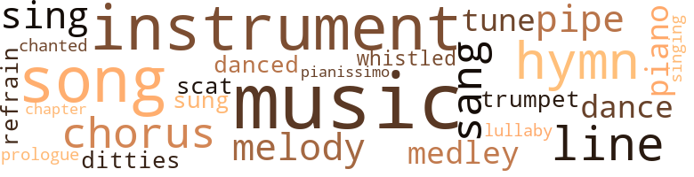
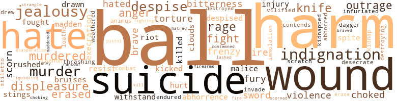

Music terms in the text
82 music-related terms matched in this text.
Most frequent terms in this topic: music (14); instrument (9); song (8); hymn (6); chorus (4)

chapter.n.01
Definition: a subdivision of a written work; usually numbered and titled
| word |
sentence |
| Chapter |
Mr. Fairley , will you take your Bible and read for Mr. McIntyre 's instruction from the seven - teenth Chapter of Jeremiah , eleventh verse ? " |
chorus.n.01
Definition: any utterance produced simultaneously by a group
| word |
sentence |
| chorus |
" Praise be to the Lord ! " were the expressions in one chorus from Maud , Mrs. Woodhouse , and old Candace . |
| chorus |
" You are not going to help that she-devil , Mr. de la Mar , " said a chorus of mocking voices . |
| chorus |
There was no more a loving husband to take his seat by her side and join in the chorus of joy that was ascending to heaven . |
| chorus |
The boys all trembled in their shoes and a chorus of voices pointed out Jeremiah Jacob as being the offender . |
cornet.n.01
Definition: a brass musical instrument with a brilliant tone; has a narrow tube and a flared bell and is played by means of valves
| word |
sentence |
| trumpet |
" Your good sense and womanly modesty certainly guard you from sounding your own trumpet , but your poetic genius , with which I have the good fortune to be acquainted and which has been most prominent in your latest production has , my dear Miss Highfield , somewhat of Sappho 's melting pathos . " |
dance.n.01
Definition: an artistic form of nonverbal communication
| word |
sentence |
| dance |
By the bye , - I congratulate you on your suc - cess , Mr. Highfield , in gaining so nice a partner in the dance . " |
dance.v.03
Definition: skip, leap, or move up and down or sideways
| word |
sentence |
| danced |
An old woman sat upon a stone a few yards from the hut , smoking a dirty clay pipe , while a few gay damsels danced around with all the characteristic hilarity of unham - pered youth . |
| dance |
The Hon. Lodric Gordon , the Commis - sioner , was the first to claim the hand of the hostess of Elmsdale for a waltz , and indeed so gracefully did she dance that there were many applicants afterward for the hand of the charming hostess . |
ditty.n.01
Definition: a short simple song (or the words of a poem intended to be sung)
| word |
sentence |
| ditties |
Soon the gallant Alice was hoisting her anchor and lifting her sails aloft , as the merry voices of the sailors rang out in some of their favorite ditties and blended with the creaking of the ship 's tacklings and the whirr of the heavy anchor , as it gradually rose from the sea . |
hymn.n.01
Definition: a song of praise (to God or to a saint or to a nation)
| word |
sentence |
| hymn |
Rita , for such was the name of the maiden , did not appear in any way disturbed by the appearance of the " English Parson , " for she soon rose from her kneeling posture and struck up in a melodious voice a hymn in Spanish . |
| hymn |
The hymn she sang was as follows : O mi Dios , que a los apostoles Das la paz siempre dichosa , Tu resurrection gloriosa Anunciandoles asi : Haz que me alma resucite Conti go a la eterna vida ; Y dame esa paz querida , Que solo se encuentra en ti ! |
| hymn |
Her hymn had inspired a thoroughly religious senti - ment among the audience , which was augmented as the girl recited in a clear and sympathetic tone the Pater - noster in her own tongue . |
| hymn |
" Carlito , will you read for me that beautiful hymn that you taught me once ? " |
| hymn |
He began to read the inspiring verses of the hymn , " Let Saints on Earth in Concert Sing . " |
| hymn |
With these words she began to sing in a melodious and spirited tone the following lines of Miss Waring 's beautiful hymn : " There are briars besetting every path That call for patient care ; There is a cross in every lot And a constant need for prayer ; Yet a lowly heart that leans on Thee Is happy anywhere . " |
lullaby.n.01
Definition: a quiet song intended to lull a child to sleep
| word |
sentence |
| lullaby |
On mountain heights were heard the wood-doves ' cooing notes of love ; in the sloping valleys the picfci rsque canefields were being wafted by the kindly breezes of perpetual summer , as they chanted their mysterious music that fell like a sweet lullaby upon the ear . |
medley.n.01
Definition: a musical composition consisting of a series of songs or other musical pieces from various sources
| word |
sentence |
| medley |
A strange medley of thoughts continued to grow and trouble him ; and in order to gain some respite , he ordered his pony and started for X to see how Rita fared . |
| medley |
Curious medley of the genus homo indeed was Richard Fullerton , alias Jack the Butcher , alias Hercules , alias Hawkie . |
melody.n.02
Definition: the perception of pleasant arrangements of musical notes
| word |
sentence |
| melody |
When my heart is overburdened by the weight of pressing circumstances , I always find wonderful relief in the sweet melody of the birds around , or in the rich music of the wanton winds , in the fragrance of the lily that perfumes the vale , or in the gay murmuring of some little brook . " |
| melody |
She listened to the sweet melody of the bright-hued birds whose notes had always pleased her , and seemed to find some music in the dreadful , deathly screech even of the horned owl . |
music.n.01
Definition: an artistic form of auditory communication incorporating instrumental or vocal tones in a structured and continuous manner
| word |
sentence |
| Music |
Music and pomp their mingling spirit shed Around me ; beauties in their cloud-like robes Shine forth a scenic paradise , it glares Intoxicant through the reeling sense Of flushed enjoyment . |
| music |
When my heart is overburdened by the weight of pressing circumstances , I always find wonderful relief in the sweet melody of the birds around , or in the rich music of the wanton winds , in the fragrance of the lily that perfumes the vale , or in the gay murmuring of some little brook . " |
| music |
Crowds of loiterers and curious sightseers gathered around Elmsdale to hear what they were frequently treated to , - the sweet , mellifluous and soul-stirring music , discoursed by a noted string band from a neighboring colony . |
| music |
The wind began to howl monotonously among the trees , and a slight shower of rain , producing its rhyth - mic music as it pattered on the house-roof , had a sooth - ing effect on him , but not sufficient to produce slumber . |
| music |
The monotonous croaking of the frogs hidden in the bushes blends with the music of the tiny crickets . |
| music |
She listened to the sweet melody of the bright-hued birds whose notes had always pleased her , and seemed to find some music in the dreadful , deathly screech even of the horned owl . |
| music |
The old man was pleased , and as the music charmed him , he kept time with his head . |
| music |
It was the zenith of his happiness to sit on the balcony in the cool of the evening and hear Mary discourse sweet music . |
| music |
Carl had been turning the pages for her , but he seemed all at once carried away by the torrent of the thrilling music that fell like a charm upon his ears , and when he col - lected himself and realized that he had been a moment dilatory in his duty , he looked tenderly into Mary 's eyes . |
| music |
On mountain heights were heard the wood-doves ' cooing notes of love ; in the sloping valleys the picfci rsque canefields were being wafted by the kindly breezes of perpetual summer , as they chanted their mysterious music that fell like a sweet lullaby upon the ear . |
| music |
The delicate cherub voice of the child , with its ringing music of lisping monosyllables , the charming mellowed inflections peculiar to that tender period of life , fell delightfully upon Zac 's ears . |
| music |
Even the merry little crickets had ceased for a while their monotonous music ; the workmen had laid down their tools , and the clang of machinery was hushed . |
| music |
Yet above the terrible and confused music of the storm rose the stentorian voices of young men who were gathered at Elmsdale to drink to the health of their convivial host , who was celebrating his fortieth birthday . |
| music |
No ; you need some rarer music . |
| music |
They have taught me many beautiful lessons , and their sweet fragrance has often , in combination with music , lulled my spirit to sleep when overwhelmed with deep sorrow . " |
musical_instrument.n.01
Definition: any of various devices or contrivances that can be used to produce musical tones or sounds
| word |
sentence |
| instrument |
I am convinced beyond the least shadow of a doubt that the instrument that dealt the mortal blow was not a revolver . |
| instrument |
It is evident therefore that a blunt instrument about the size of a crowbar must have pierced the brain , and was apparently later used to batter the skull . " |
| instrument |
He drew back with alarm , the idea not even occurring to him to withdraw the fatal instrument . |
| instrument |
The revolver which was dis - covered near mv cousin 's corpse and which everybody thought was the instrument of suicidal death , was as innocent as heaven ; - it was only a ruse that worked splendidly . |
| instrument |
I could not bear to come near it , much less to enter it , for it contains that cruel instrument which made me a murderer . |
| instrument |
It had taken him some time fully to realize the force and meaning of that decisive com - munication ; and now that all his hopes were shattered and his dreams of happiness with Mary were vanished , a sensation of excruciating agony swept over him , and his very brain and heart seemed crushed by some ter - rible instrument of torture . |
| instrument |
He therefore carefully unloaded the instrument of death , went downstairs , and threw it into the fire . |
| instrument |
I found the body steeped in blood , with a revolver , - the probable instrument of destruction , - in close proximity . |
| instrument |
Provi - dence , and whether you or another be the instrument selected by God , " returned the woman , " I have strong hope that I shall live to see my desire upon mine enemy . " |
piano.n.01
Definition: a keyboard instrument that is played by depressing keys that cause hammers to strike tuned strings and produce sounds
| word |
sentence |
| piano |
Mary went to the piano , and in her rich soprano voice sang that spirited song , " Les Italiens en Algiers , " while her fingers moved gracefully over the keyboard . |
| piano |
At this moment they were startled by the melodious strains of the piano as Mary struck up with her usual fascinating touch the prelude of the grand old song , " Home , Sweet Home . " |
piano.n.02
Definition: (music) low loudness
| word |
sentence |
| pianissimo |
The tremulous peals of the organ as they swelled to the rich volumes of a soul-stirring fortissimo , or faded away in the sweet cadence of a pathetic pianissimo , had no charm for her . |
pipe.n.04
Definition: a tubular wind instrument
| word |
sentence |
| pipe |
An old woman sat upon a stone a few yards from the hut , smoking a dirty clay pipe , while a few gay damsels danced around with all the characteristic hilarity of unham - pered youth . |
| pipe |
At the door a cab was drawn up , on the box of which sat a burly-looking coachman just in the act of drawing out his pipe to enjoy a pleasant whiff ; a good-looking face , which bore the marks of tender youth and a high degree of intelligence , peeped out anxiously from be - tween the curtains . |
| pipe |
" Now , Candace , " said Zac , adjusting his pipe and preparing to have a good smoke , " I think we shall have to seek out some Egypt to send the young saviour of Elmsdale to before he gets into the hands of Herod . " |
prologue.n.01
Definition: an introduction to a play
| word |
sentence |
| prologue |
If you can read just here , " pointing to a par - ticular point of the manuscript , " you will observe from the prologue of this speech , which Ralph Gordon pours forth against his wife Ethel , that an interesting part of the context is missing , which would just harmonize with the contents of this letter that implicated Mrs. Woodhouse , and which , according to my custom , I took pains to preserve . |
refrain.n.01
Definition: the part of a song where a soloist is joined by a group of singers
| word |
sentence |
| refrain |
And the well-known refrain , " I 've reached the land of corn and wine , " rent the air as it burst forth from scores of throats . |
scat.n.01
Definition: singing jazz; the singer substitutes nonsense syllables for the words of the song and tries to sound like a musical instrument
| word |
sentence |
| scat |
The two friends , - Mrs. Woodhouse and Maud Fair - ley , - were bending over various pieces of clothing scat - tered here and there upon the floor , and out of the chaotic jumble endeavouring to put things in order , when Carl entered . |
sing.v.02
Definition: produce tones with the voice
| word |
sentence |
| sang |
A dark cloud crept over the face of the moon , and the mate sang out to Captain Dalrymple . |
| sang |
The hymn she sang was as follows : O mi Dios , que a los apostoles Das la paz siempre dichosa , Tu resurrection gloriosa Anunciandoles asi : Haz que me alma resucite Conti go a la eterna vida ; Y dame esa paz querida , Que solo se encuentra en ti ! |
| sung |
I always had an idea that you were free from the prejudice of the mulatto , and this has been greatly confirmed since you have , with all the energy of your poetic soul , so sweetly sung of the loves of Andromeda and Perseus . |
| sing |
" Certainly , sir , I heard you say that you wanted to get up institutions for making people happy , and I as - sure you , sir , that though I read my Bible often , and hear Peggy and Nancy sing Psalms every night , I never remember the church door till I get down half of Allan 's Old Tom . |
| sing |
Why , it 's then I feel happy and ready to sing for joy , and off I go to the nearest house of wor - ship to join in the ' 0 , be joyful . ' " |
| sang |
Mary went to the piano , and in her rich soprano voice sang that spirited song , " Les Italiens en Algiers , " while her fingers moved gracefully over the keyboard . |
| sing |
With these words she began to sing in a melodious and spirited tone the following lines of Miss Waring 's beautiful hymn : " There are briars besetting every path That call for patient care ; There is a cross in every lot And a constant need for prayer ; Yet a lowly heart that leans on Thee Is happy anywhere . " |
| sang |
As she reached the last verse her feelings became more intense , and she sang more pas - sionately , while her touch became livelier . |
singing.n.01
Definition: the act of singing vocal music
| word |
sentence |
| singing |
Fancy you is hear - ing the angel singing the glad song of joy and telling you to cast your cares away . " |
song.n.01
Definition: a short musical composition with words
| word |
sentence |
| song |
She ceased her song , and a solemn silence ensued . |
| song |
Twine the young glowing wreath ; But pour not your spirit in the song Which through the skies , deep azure floats along Like Summer 's quickening breath ! |
| song |
Boys , strike up the good old song . " |
| song |
Mary went to the piano , and in her rich soprano voice sang that spirited song , " Les Italiens en Algiers , " while her fingers moved gracefully over the keyboard . |
| songs |
The cut of his coat , the shape of his collar , and the style of his walk were imitated by the street urchins , while the women of shadowy reputation found a pleas - ure in linking his name with their lewd songs , holding him up as the truest sample of the " man of life . " |
| song |
At this moment they were startled by the melodious strains of the piano as Mary struck up with her usual fascinating touch the prelude of the grand old song , " Home , Sweet Home . " |
| song |
Her whole being seemed merged in the song . |
| song |
They were sad and filled with tears ; but before he could ask himself why those sweet , sparkling orbs were bedimmed , the last note of the song had died away , and Mary suddenly fell upon the floor as if dead . |
| song |
Fancy you is hear - ing the angel singing the glad song of joy and telling you to cast your cares away . " |
tone.v.01
Definition: utter monotonously and repetitively and rhythmically
| word |
sentence |
| chanted |
On mountain heights were heard the wood-doves ' cooing notes of love ; in the sloping valleys the picfci rsque canefields were being wafted by the kindly breezes of perpetual summer , as they chanted their mysterious music that fell like a sweet lullaby upon the ear . |
tune.n.01
Definition: a succession of notes forming a distinctive sequence
| word |
sentence |
| line |
This unexpected change in the clergyman 's demeanor impressed seriously the wily and experienced Ethiopian , and he immediately resolved to adopt a certain line of tactics to cope with the requirements of the situation . |
| lines |
He was on his way home to St. Joseph ; and as each scene once more familiarised itself to his ardent gaze , he could not help giving utterance to spasmodic ejaculations nor could he refrain from quoting Scott 's lines : " Breathes there a man with soul so dead Who never to himself hath said : ' This is my own , my native land ' ? " |
| tune |
I am too poor and must go out to seek my for - tune and gain wisdom . |
| line |
Rum shops are not in my line . " |
| lines |
With these words she began to sing in a melodious and spirited tone the following lines of Miss Waring 's beautiful hymn : " There are briars besetting every path That call for patient care ; There is a cross in every lot And a constant need for prayer ; Yet a lowly heart that leans on Thee Is happy anywhere . " |
| lines |
I can see now my mother 's fair face bending down sweetly upon me as I repeated the simple lines : " Gentle Jesus , meek and mild , Look upon a little child ; Pity my simplicity , Suffer me to come to Thee . |
| tune |
I do not know what your future movements may be , but you will be in a position to live like a real Monte Cristo from the proceeds of your lucky windfall and still accumulate a handsome for - tune . |
| melody |
A bright light came over his face as he saw the child , and her pretty little voice again enriched the air with its melody . |
whistle.v.01
Definition: make whistling sounds
| word |
sentence |
| whistled |
There was a grave-digger busy at work preparing a grave for one who had died a few hours before , and as the stalwart worker threw up spadefuls of heavy moist earth he whistled a lively air and seemed quite at home in his vocation . |
Violence terms in the text
234 violence-related terms matched in this text.
Most frequent terms in this topic: ball (15); suicide (11); harm (11); hate (9); indignation (8)

abhor.v.01
Definition: find repugnant
| word |
sentence |
| loathe |
I can not , however , but hope it will be for your benefit in every way ; we have been such good friends for such a long time that I do loathe to part with you . " |
| abhorred |
So saying Carlito parted from the man whom of all others he utterly abhorred , and on whom he had not laid his eyes since the day of the examination at the Canon 's Grammar School . |
abhorrence.n.01
Definition: hate coupled with disgust
| word |
sentence |
| execrations |
Thy crime becomes unpardonable in the eyes of thine accusers , who would banish thee with - out the gates and level at thee impious execrations , un - mindful of the voice of conscience that sternly rebukes them for the dark stains which desecrate their own lives , but which lie hidden beneath the thick veil of hypocrisy ; unheedful of the master Master 's echoing word : " He that is without sin among you let him cast the first stone . " |
| abhorrence |
The company of McIn - tyre now proved extremely distasteful to him , and he quitted his side , a deep feeling of abhorrence rising in his breast . |
| abhorrence |
He encountered a scene which he had hardly expected , he did not antici - pate seeing the lion crouching so readily , and , with a feeling of pity mixed with abhorrence , he walked rapid - ly out of the prison to summon Mrs. Woodhouse and Carl . |
| execration |
A few moments before there was a wave of indignation against the woman who had dared thus to offend society , and now , as she lay cold and senseless upon the ground un - dergoing the penalty of her suspected unfaithfulness , there was deep pity for her and curses and execration for the inhuman wretch who dared to strike such a foul blow at such a moment . |
abrasion.n.01
Definition: an abraded area where the skin is torn or worn off
| word |
sentence |
| scratch |
Come to the scratch at once . |
aggravation.n.01
Definition: an exasperated feeling of annoyance
| word |
sentence |
| exasperation |
" Confound you , boy ; do not vex me ! " retorted Mc - Intyre in exasperation . |
anger.n.01
Definition: a strong emotion; a feeling that is oriented toward some real or supposed grievance
| word |
sentence |
| anger |
I am awfully sorry I have aroused your anger , and I beg your forgiveness . " |
| ire |
Can you imagine why your brother 's ire has been so much kindled against me ? |
| ire |
The Canon was in no great hurry to part with him , especially since his brother 's ire had somewhat sub - sided . |
| ire |
The old gentleman betrayed unusual ex - citement , and from the unpleasant look which Lily , - the younger of the two girls , - cast at Violet now and then , it was evident that the latter had aroused the Colonel 's ire by some imprudent remark . |
| anger |
As she disappeared from his view he clenched his fist , bit his lips , and stamped with anger . |
| anger |
" My dear sir , " said Carl in a tone of evident anger , and with fixed determination on his lips ; " I had given you credit for much more common sense . |
| anger |
Whenever he met Mary and Mr. Dyett together he found that his anger and jealousy had become greatly modified , and he lifted his hat with grace and apparent good will . |
animosity.n.01
Definition: a feeling of ill will arousing active hostility
| word |
sentence |
| animus |
It seems to me that you have some animus against me ; if so > I must decline having any further conversation with you , and postpone the inquiry I in - tended to make . " |
bruise.n.01
Definition: an injury that doesn't break the skin but results in some discoloration
| word |
sentence |
| bruises |
You will , of course , apprise me of developments , and of how my friend 's bruises get on . " |
| bruises |
There were numerous bruises about his head , which told that that member had been subjected to extraordinary violence . |
cannon.n.04
Definition: heavy automatic gun fired from an airplane
| word |
sentence |
| cannon |
She at length summoned up courage , and with tears streaming from her sad eyes , she whispered , - nay stam - mered , - the words that fell upon Bertie 's ears like a fatal cannon shot . |
cloud.n.05
Definition: suspicion affecting your reputation
| word |
sentence |
| clouds |
Hugh desisted from his rash attempt at intruding into the sanctum of the Professor , and was about to make a remark , when in an intelligible and eloquent tone the Professor surprised them with the following burst of oratory : " When black clouds cover the sun at midday , then the sorrows of Elmsdale shall begin , and when the white dove no longer sits upon the wall , then the dark lan - tern will shine to drag the fox from his hole , the bones from the earth , and give back honour and virtue to Elmsdale . " |
| clouds |
He closed the window and sat down , when he distinctly heard from a well-known voice the words which sent a fresh pang through his soul : " When black clouds cover the sun at midday then shall begin the sorrows of Elmsdale , and when the white dove no longer sits upon the wall , the dark lantern will shine , to drag the fox from his hole , the bones from the earth , and give back virtue and honour to Elms - dale " " This surely points to me . |
contemn.v.01
Definition: look down on with disdain
| word |
sentence |
| despised |
I have drunk of the waters of Meribah ; my people have cruel - ly despised me , and I am counted as a thing of nought amongst them . |
| despise |
Himself somewhat of a mystic , he did not despise a voice from the dead . |
| despise |
I can no longer feel myself justified in identifying myself with a daughter who seeks to bring disgrace on the honored name of Highfield ; and much as I have loved you , I now spurn and despise you . |
| despise |
Do you despise the stone-axe because it has been succeeded by wrought steel ? |
| despise |
Be slow to judge , and slower to despise . |
| scorned |
These were the fruit of his indiscretion and im - pulsiveness , and he actually scorned himself at that mo - ment . |
| despised |
When you meet old Dives down yonder and he gives you his experience , you will be sorry you ever despised a drink . " |
| Scorn |
Scorn me not in mine extreme of misery . |
| despise |
Since I must abandon my fondest hopes , let me feel that you do not despise me , that you will still keep a warm corner in your heart for me , and I shall be con - tent . |
| despise |
- whom I adored with a transcendent love , now that you are converted into a veri - table Messalina , I hate and despise you . |
| scorn |
She treated them with dignified scorn , which only intensified the contempt that was fomenting against her . |
| contemned |
He played billiards with gentlemen of unimpeachable character into whose society at one time he never aspired to enter ; and with the greatest sang-froid and air of chivalry offered his arm to ladies who before had contemned him . |
| scorn |
It was so full of untold sadness and ringing with scorn . |
contend.v.06
Definition: be engaged in a fight; carry on a fight
| word |
sentence |
| Contends |
Strong affection Contends with all things , and o'ercometh all things . |
craze.n.02
Definition: state of violent mental agitation
| word |
sentence |
| frenzy |
The indis - criminate distribution of the coarsest rum , which was quaffed in large quantities , caused the brain of many to burn with frenzy , and elicited from them gestures and antics that seemed to argue in favor of Darwin 's theory of the simian origin of mankind . |
| frenzy |
A pome - granate mark was exposed to view , and Ellen had not gazed upon it for a second when she fell upon Carlito 's neck , with an impulse akin to frenzy , and kissed him eagerly , then fell upon the floor insensible . |
| frenzy |
With animation akin to frenzy , Carl placed his arm around Daphne 's neck and drew her face toward him . |
dagger.n.01
Definition: a short knife with a pointed blade used for piercing or stabbing
| word |
sentence |
| dagger |
how I regarded him almost as a demigod at that moment when the dagger pierced my heart , when he bowed with heroic resigna - tion like any son of Sparta , and with the tears stream - ing from his eyes said feelingly , ' I can not be yours . ' |
defy.v.01
Definition: resist or confront with resistance
| word |
sentence |
| withstand |
Here the Canon could not withstand the wave of emotion that swept over him . |
| withstand |
The curious Professor could not withstand the temptation of handling the volumes , bent as he was upon cramming in his brain all that it could possibly take in within the space of a few minutes . |
desecrate.v.01
Definition: violate the sacred character of a place or language
| word |
sentence |
| desecrate |
Thy crime becomes unpardonable in the eyes of thine accusers , who would banish thee with - out the gates and level at thee impious execrations , un - mindful of the voice of conscience that sternly rebukes them for the dark stains which desecrate their own lives , but which lie hidden beneath the thick veil of hypocrisy ; unheedful of the master Master 's echoing word : " He that is without sin among you let him cast the first stone . " |
destroy.v.04
Definition: put (an animal) to death
| word |
sentence |
| destroying |
But the blow had only stunned Carlito , and when he again opened his eyes it was to see his assailant stand - ing over him and gazing at him with that triumphant air with which a cat looks upon its trembling prey be - fore destroying it . |
| destroyed |
The first she destroyed and the sec - ond has put you in possession of her entire estate . " |
displeasure.n.01
Definition: the feeling of being displeased or annoyed or dissatisfied with someone or something
| word |
sentence |
| displeasure |
Just as Jeremiah Jacob was seized by the two burly boys , who were exulting over their prey , Carl entered , and having been informed why Jeremiah was about to undergo such stern punishment , he gave a look of evi - dent displeasure at his school-fellows and bursting into passionate tears he sobbed : " I took the ball from your drawer , Mr. Parker , and I can not see Jacob whipped for what I did . " |
| displeasure |
Your excellent mind , your winning face , your womanly virtues will not shield you from my displeasure . " |
| displeasure |
" It does not matter what your opinion may be , " said Leslie , unable to conceal his displeasure . |
| displeasure |
I had rather face your displeasure and be true to his noble soul than forsake him and be reinstated in your affec - tion . |
| displeasure |
He was a terror in the community in which he lived , and nobody dared disobey his order or incur his displeasure , for fear that , irrespective of any considera - tion whatever , his brawny arm might send his victim to measure his length on the ground . |
draw.v.23
Definition: pull (a person) apart with four horses tied to his extremities, so as to execute him
| word |
sentence |
| drawn |
The trap was drawn up at the door , and as Mr. Highfield prepared to enter , by a sudden impulse she caught his hand , but he shook her off with disdain . |
| drew |
Four o'clock had just struck when a cab drew up at John Highfield 's door and called for his daughter . |
| drawn |
At the door a cab was drawn up , on the box of which sat a burly-looking coachman just in the act of drawing out his pipe to enjoy a pleasant whiff ; a good-looking face , which bore the marks of tender youth and a high degree of intelligence , peeped out anxiously from be - tween the curtains . |
envy.n.01
Definition: a feeling of grudging admiration and desire to have something that is possessed by another
| word |
sentence |
| envy |
It was I who put an end to the useful , benevolent , inoffensive life of my cousin , Burleigh Woodhouse ; these blood-stained hands were urged by craft and envy to lift themselves against the man who was my best friend . |
erase.v.01
Definition: remove from memory or existence
| word |
sentence |
| erased |
On referring to Carlito 's copy it was discovered that the full stop which was placed after the name Bertie was erased and the verb is took its place ; the words " of the name man " were replaced by the name Mary Highfield and defied detection by the ordinary observer . |
| erased |
I can see that the name ' Ethel , * occurring in two places , has been carefully erased and the name ' Edith ' inserted instead . " |
| erase |
" Ah ! " he continued , " if I were allowed the chance to escape would I not repent of my crimes and by my acts of humilia - tion and self-crucifixion labour to erase this most fatal blot from my name . |
| erased |
The name of the prominent female character was neatly erased and " Edith , " Mrs. Wood - house 's Christian name , inserted instead . |
| erased |
One kiss , the first and last from you , dear Carl , shall leave its sweet impress on my lips , and the memory of it shall never be erased from my brain . |
fight.n.02
Definition: the act of fighting; any contest or struggle
| word |
sentence |
| combat |
A fierce combat ensued . |
fight.v.02
Definition: fight against or resist strongly
| word |
sentence |
| fought |
I am an old salt and have fought many battles with fiercer seas than you experienced during this voyage , but I have never had my spirit cowed or my blood thrilled as they were by the voice of that poor woman whom those beasts of hell kidnapped for reasons I can not guess . |
| fought |
Colonel Browne had been in the Army and had fought in several engagements , which had added glory and territory to the British Empire , and as old age approached , he retired on a decent pension and settled with his two handsome daughters , - children of a second marriage , - in an old - fashioned yet comfortable building in the suburbs of the town . |
| fight |
I shall live and fight manfully against this terrible ordeal , and time will heal my wounds , for God is just and good . |
| fight |
" I will fight to the end for you , Mother , " said the child with emotion . |
| fight |
" You are yet so young , my child ; and I shall be under the cold earth before you are big enough to fight my battle . " |
| fight |
I know he is good and hears the prayers of little children , and I will wait patiently until the time comes for me to fight your battle . |
| fighting |
Do n't fear , Mr. Mc - Intyre ; your prize is worth fighting for , and we sha n't disappoint you . " |
firearm.n.01
Definition: a portable gun
| word |
sentence |
| firearms |
It only occurred to the far-seeing Hugh Highfield that no report of firearms was heard on the fatal night . |
fury.n.01
Definition: a feeling of intense anger
| word |
sentence |
| fury |
The expansive , limitless , unfathomable ocean seemed majestic in its tranquil and mysterious stillness , as - contrasted with its severer moods , when with appalling fury the breakers rise mountain high and bear upon their foaming crests the helpless tremb - ling bark that staggers to and fro at the mercy of their wild caprice . |
| rage |
Then do not despair ; though the waters rage , His voice will yet wdiisper to the troubled element , ' Peace , be still . ' |
| rage |
High - field was at first frantic with rage , then suddenly be - came calm and began to weep like a child . |
| rage |
But the latter , in a paroxysm of rage , tore himself away , and like an infuriated tiger made for Carlito , inflicting a severe blow upon his head with a stick he held in his hand . |
| rage |
Mary grew indignant with rage . |
| fury |
" The storm has now burst with all its terrific fury , " said he , " and I find myself a wretched being . |
| rage |
Carlito gazed at the cruel perpetrator of this in - human act with a rage that seemed unbounded . |
| fury |
Even Schopenhauer , in the fury of his pessimism , would have hailed such a one as thee as a beaming light ! |
gag.v.06
Definition: cause to retch or choke
| word |
sentence |
| choked |
I tell you , sir , I myself narrowly escaped being choked to death , or having a bullet sent through my brain by one or other of the villains . " |
| choking |
She was making an effort to control the choking sensations in her throat , and to subdue the beating of her heart . |
| choked |
I had thought you were getting choked a while ago and that a glass of water would have done you good . " |
| choked |
And this brings us to the conclusion that , no matter how low a being may sink in moral degradation , there is yet something Divine within him , though it be warped and suppressed by the contamination of evil environment and choked by the vicious passions and im - pulses of his lower nature . |
harm.v.01
Definition: cause or do harm to
| word |
sentence |
| harm |
I do not know you , good men , - I have never seen your faces before , but I know that you have hearts throbbing within you which will not permit you to wantonly destroy the life of a woman who has never done you harm . |
| harm |
But I do not question its origin since I am convinced that you really love me and could never have hoped to harm me in any way whatever . |
hate.n.01
Definition: the emotion of intense dislike; a feeling of dislike so strong that it demands action
| word |
sentence |
| hate |
And so , relegated under the ban of a hideous conventionalism to an atmosphere where the sunshine of human sympathy penetrates not , thy moral sensibility becomes warped , thy self-respect decays , thy love becomes hate , thy once refined tastes resolve them - slves into brutal abandonmnt , thou at last fallest head - long into the pit of complete destruction . |
| hate |
" Better the everlasting hate of an unfriendly viper than the poisoned stings of feigned sincerity , " she re - plied , in all the eloquence of her native tongue . |
| hate |
Is your hate made of such im - placable stuff that you can not be amenable to reason of any sort ? " |
| hatred |
Mr. McIntyre desires to approach you on this all-important subject , feeling sure that the chord which Christendom strikes to-day is vibrating as powerfully in your heart as in that of any other earnest disciple of Christ , and will lead you to forgive and for - get hatred , malice , and all uncharitableness . |
hate.v.01
Definition: dislike intensely; feel antipathy or aversion towards
| word |
sentence |
| hate |
" Yes , Cyril ; that 's a fact , and I confess I hate him , and were I to follow the dictates of my own mind at this moment , I 'd punch him through . " |
| hated |
Since Cyril had pitted him against him he actually hated Carlito as much as he had loved him . |
| hate |
" You have treated me so cruelly , yet I can not hate you . |
| hates |
My father has dis - covered this and hates him . |
| hated |
He had always loved , me , and I in turn hated him for his love , and meditated destruction . |
| hated |
I hated her at that instant when I saw her fastening a nosegay to your coat , and I have since won - dered from what unknown depth of my nature such a manifestation of savage instincts could have sprung . |
| hate |
One night as he stood before Mary 's picture , gazing at it with burning , anxious eyes , he indulged in musings such as this : " My dearest girl , perhaps if it were possible for me to hate you I could then determine to live on in this world and find my Eden in another woman 's love , but , alas ! |
| hate |
I can not hate you . |
| hate |
0 my God , it is true , - I can - not hate her ! |
| hate |
- whom I adored with a transcendent love , now that you are converted into a veri - table Messalina , I hate and despise you . |
immolation.n.01
Definition: killing or offering as a sacrifice
| word |
sentence |
| immolation |
A moment 's resolu - tion , a complete immolation of self , wrould have nipped the bud in its infancy and prevented an unprofitable growth . |
indignation.n.01
Definition: a feeling of righteous anger
| word |
sentence |
| indignation |
A mo - mentary smile beamed on his face , but it was quickly followed by a dark cloud of indignation . |
| indignation |
The last words of the speaker were uttered with much emphasis , and his eyes sparkled with indignation as he advanced toward the spot where Carlito de la Mar lay reclining on the ground engaged in translating one of the " Carmina " of Horace . |
| outrage |
" That vagabond , Bertie Melville , should be made to suffer for his outrage on a poor un - offending youth like you . |
| outrage |
I again repeat that I shall see Bertie Melville repent of his outrage upon me yet . |
| indignation |
Carlito was naturally surprised at the Canon 's words , and though he hung down his head in a somewhat bash - ful manner , the thought of Mr. Highfield 's threat caused indignation to swell within his breast like a mighty river . |
| outrage |
You have caused me to un - justly outrage a true gentleman by your lying tales . |
| indignation |
In a moment the indignation which had been piling up in the breast of Carl against the underhanded and unprincipled Cyril Merton now gave way before the rushing stream of pity that rose within him as he contemplated the miserable specimen of manhood be - fore him . |
| indignation |
It was I who impressed upon Rev. Fairley that Hugh Highfield was guilty of this misdemeanor , and Mr. Fairley , having sternly censured him for the offense in his indignation , I got my deserts in a good horse-whipping . |
| outrage |
Let me die , 0 God , and be delivered from this heinous outrage . " |
| indignation |
A few moments before there was a wave of indignation against the woman who had dared thus to offend society , and now , as she lay cold and senseless upon the ground un - dergoing the penalty of her suspected unfaithfulness , there was deep pity for her and curses and execration for the inhuman wretch who dared to strike such a foul blow at such a moment . |
| indignation |
None could look at those large , mild , grey eyes of his , winch adapted themselves to all circum - stances , and not see in them honest indignation , min - gled with the apparent straight-forwardness that in - nocence always imparts . |
| indignation |
Mrs. Woodhouse curled her lips , and her eyes spar - kled with indignation . |
infuriate.v.01
Definition: make furious
| word |
sentence |
| infuriated |
But the latter , in a paroxysm of rage , tore himself away , and like an infuriated tiger made for Carlito , inflicting a severe blow upon his head with a stick he held in his hand . |
injury.n.01
Definition: any physical damage to the body caused by violence or accident or fracture etc.
| word |
sentence |
| harm |
David says ' touch not mine anointed and do my prophets no harm . ' " |
| harm |
Carlito , of course , consented to do this and meant to keep his word , but after having reached his apartment and undressed , he recollected that there was a problem that he had to work out for the next day , and he thought there would be no harm if he spent just a short time in solving it . |
| harm |
The thorns some - times cause dreadful harm , but if the roses be cared for and nurtured they will always fill the atmosphere with their delicious perfume . |
| injury |
Though his hat had been carefully placed over the bandage , it occurred to him that the prying gaze of the young girl had observed something un - usual , when in a tone faltering with emotion , she said : " I see you have sustained some injury , Mr. de la Mar. " " I have met with an accident , Miss Highfield ; but it is of no great importance , and I hope to be soon all right . " |
| harm |
" By all means , Professor , I see no harm in one grog shop among the churches . " |
| harm |
" He is somewhat strange and fitful at times , but he is a good and clever old chap and means no harm to any one . " |
| harm |
" How can he mean no harm when he literally cursed Hugh , and would not be appeased until an ample apol - ogy had been made ? " |
| injury |
He must have sus - tained some injury , which temporarily deranged him , and impelled him to commit the awful deed . |
| harm |
Mrs. Woodhouse cast a glance at Lindsay and Hugh , and in their faces she read assent to the proposal ; while " what harm can reach y ^ u when we are here to protect ? " seemed to speak from their eyes . |
| harm |
" There can be no harm in his remaining , since he will learn nothing to his detriment nor get any harm . " |
| harm |
" There can be no harm in his remaining , since he will learn nothing to his detriment nor get any harm . " |
invade.v.01
Definition: march aggressively into another's territory by military force for the purposes of conquest and occupation
| word |
sentence |
| invade |
Ah , the foolish fears that will sometimes invade the breast of a rational man ! " |
jealousy.n.01
Definition: a feeling of jealous envy (especially of a rival)
| word |
sentence |
| jealousy |
If I touch a tender chord in your nature or arouse your jealousy , I hope you will be charitable enough to for - give me . " |
| jealousy |
There is , there - fore , no room in my breast for foolish jealousy of such an angel as you are . |
| jealousy |
He had rated her high above the mean and unwholesome sentiment of jealousy , and as far as he was concerned was he not justified in doing so , since her experiences of him were enough to warrant the conviction of his profound stability in love ? |
| jealousy |
Could it be possible , he thought , that this erudite young girl , - whose brilliant intellect had fed upon the very best pabulum which the labours of philosophers and savants of ancient and modem times could afford , - should fall a prey to jealousy ? |
| Jealousy |
Jealousy was gnawing spitefully at the very centre of Mary 's heart , while Carl was wishing that the sit - uation , so unpleasant and undesirable for him , would change and relieve him of the cruel tortures that he was undergoing . |
| jealousy |
In his deep disappointment Dyett became intensely jealous , and this jealousy took the ascendancy of clear , dispassionate reason . |
| jealousy |
Her jealousy began to burn with an overpowering flame , and her womanly pride was hurt . |
| jealousy |
Whenever he met Mary and Mr. Dyett together he found that his anger and jealousy had become greatly modified , and he lifted his hat with grace and apparent good will . |
kick_back.v.02
Definition: spring back, as from a forceful thrust
| word |
sentence |
| kicked |
I am going to give you the nice little news that Mr. George McIntyre , Esquire , of Elmsdale , was horse - whipped and almost kicked to death ! " |
| kicked |
The brute twisted like the serpent he is ; and when he tried to defend himself , Mr. Hugh gave him a few cuffs , threw him down , and then kicked him all about . |
kidnap.v.01
Definition: take away to an undisclosed location against their will and usually in order to extract a ransom
| word |
sentence |
| kidnap |
He de - layed betraying the whereabouts of the unfortunate woman whom the villains were determined to kidnap , thinking that some one might turn up to his assistance . |
| kidnapped |
I am an old salt and have fought many battles with fiercer seas than you experienced during this voyage , but I have never had my spirit cowed or my blood thrilled as they were by the voice of that poor woman whom those beasts of hell kidnapped for reasons I can not guess . |
kill.v.10
Definition: cause the death of, without intention
| word |
sentence |
| killed |
I forged a document making myself the sole beneficiary of the deceased and placed it in his pocket after I had killed him , with the famous letter to his widow leaving no doubt of her guilt . |
| killed |
" I shall pray , Mother , that I may have the privilege of finding out the man who killed my father and brought you to this condition . |
| kill |
" Do you mean dat dat beast want to kill de chile , too ? |
knife.n.02
Definition: a weapon with a handle and blade with a sharp point
| word |
sentence |
| knife |
" Yes ; this was caused by the knife of the clever French surgeon , Dr. Raoul Angeron , whom I saw trepanning the child 's skull with my own eyes . |
| knife |
The marks of the surgeon 's knife could not be mistaken . |
| knife |
Lindsay , fearing the worst , approached him , and lay - ing open the murderer 's bosom , discovered that a pocket knife was sunk almost to the hilt in McIntyre 's breast . |
| knife |
And he looked painfully into Carl 's face and expected to see him plunge the knife up to the hilt into the flesh , but he was astonished when he saw Carl watching him with pity . |
| knife |
Mamma , when you were talking to that man , I remembered the sad story of poor Virginia and her father , which papa often told me , and I now confess that if you had consented to take anything from George McIntyre for me this knife I now show you should have been pressed against my heart , and my father 's spirit would have driven it in deep . " |
madden.v.03
Definition: make mad
| word |
sentence |
| madden |
Do not madden me , sir , I pray , do not madden me . |
| madden |
Do not madden me , sir , I pray , do not madden me . |
| maddened |
The thought simply maddened him . |
malice.n.01
Definition: feeling a need to see others suffer
| word |
sentence |
| spite |
" Why do you think so ? " enquired Lindsay , who , de - spite his eminence as a lawyer , was not as farseeing as his companion . |
| spite |
The building , however , showed the ravages of time , in spite of the frequent attempts of industrious hands to repair it by nailing pieces of tin over the gaping apertures , or stuffing rags into the crevices . |
| malice |
Mr. McIntyre desires to approach you on this all-important subject , feeling sure that the chord which Christendom strikes to-day is vibrating as powerfully in your heart as in that of any other earnest disciple of Christ , and will lead you to forgive and for - get hatred , malice , and all uncharitableness . |
| malice |
I bear her no malice , and shall only attribute her remarks , which are so preg - nant with rancour , to the rashness incident to woman 's nature . |
murder.n.01
Definition: unlawful premeditated killing of a human being by a human being
| word |
sentence |
| murder |
" I can not assist you so far ; my light is a little dim ; but murder , - red , bloody , murder , - is at hand . " |
| murder |
But he was spared the pains of red-handed murder . |
| murder |
Even the old rector , Father Fairley , had absolutely lost sight of the suspicion of murder with which the name of the popular McIntyre had at one time been associated , and admitted him to the compan - ionship of his family circle without the slightest scru - ple . |
| murder |
This document the officer read in a stern voice , and then said : " George McIntyre , in the name of the King , we ar - rest you for the murder of Burleigh Woodhouse , late of Elmsdale . " |
| murder |
I know , too , that ' love and murder will out . ' " |
| murder |
" I firmly believe , sir , " ejaculated Hugh with great emphasis , " that a barefaced murder has been perpe - trated , and that by no stranger , either . |
| murder |
But the question narrows itself to this : Whence did the Chronicle get the knowl - edge of certain private matters , which are not the prop - erty of the public , and which they could never have known ; and how was this distinguished journal in a position to solve this knotty problem of murder or sui - cide ? |
murder.v.01
Definition: kill intentionally and with premeditation
| word |
sentence |
| murdered |
" He did not die a natural death , but was murdered many years ago . " |
| murdered |
You , the wife of the unfortunate murdered Burleigh Woodhouse , shall henceforth have the respect that is your due . " |
| murdered |
I shall never believe such a thing ; he was murdered , - yes , murdered by some foul being , who for his own ends has also bruited it abroad that I have been unfaithful . " |
| murdered |
You know I do n't trust that rascal , because I will never lose sight of the fact that it was no other but him who murdered Mahs Burleigh , no matter what judge , jury , or any earthly man may say to the contrary . |
| murdered |
He told me that he had not seen McIntyre for some time ; he joined with me that he was nasty fellow , and said that he was of opinion that Mahs Burleigh was murdered by him to get his wealth , and that the right heir of Elmsdale would , if he lives , come in for his property . |
musket_ball.n.01
Definition: a solid projectile that is shot by a musket
| word |
sentence |
| ball |
Just as Jeremiah Jacob was seized by the two burly boys , who were exulting over their prey , Carl entered , and having been informed why Jeremiah was about to undergo such stern punishment , he gave a look of evi - dent displeasure at his school-fellows and bursting into passionate tears he sobbed : " I took the ball from your drawer , Mr. Parker , and I can not see Jacob whipped for what I did . " |
| ball |
" Well , gentlemen , " she said , " I sincerely hope noth - ing will intervene to prevent your honouring us with your presence at the ball ! " |
| ball |
" We certainly trust not , " answered Lindsay , " since I should like to give my young guest an idea of what a ball at Elmsdale is like . " |
| ball |
" Shall I put this in now ? " enquired Maud , laying her hand upon a ball dress of white satin , trimmed with fine chiffon and lace . |
| ball |
This dress will ever remind me of that fatal ball and of the darkest days of my life . |
| ball |
It was the evening of the ball , and everything had been arranged in grand style for the occasion . |
| ball |
There was to be a ball at the Brownes * , the leading society folk of the district . |
| ball |
At this ball Mary was one of the honored guests . |
| ball |
There was a brilliant ball at Elmsdale Cottage last night , at which gathered most of the leaders of society , and while they were in the height of enjoyment , Mr. Woodhouse seems to have met his death by some means which is yet to be explained . |
| ball |
" As far as I understand , Mr. Heineman 's evidence is merely circumstantial , although he set the ball roll - ing . " |
| ball |
It began with personal reminis - cences of the Woodhouse family , which were flattering and almost panegyric ; then dealt with the entire de - tails , from the night of the fatal ball up to the arrest of Mr. McIntyre . |
| ball |
A most favour - able opportunity occurred on the fatal night of the ball , a night contemplated by my cousin in which to make me and others happy , but which I hailed with inexpressible delight , because I knew it would be favourable to my scheme , when reason would be clouded by champagne . |
| ball |
He accompanied me outside the ball room with the intention of giving me remedies , but I induced him to go with me to a dark spot under a lime tree , and there , with an iron stake , which now lies in a wooden chest in my private room at Klmsdule , where not a living soul has entered since I took possession of the property , I performed the heinous deed which stamps me a foul murderer . |
| ball |
One day he was induced by a harebrained impulse to take a cricket ball on which the master had placed his veto , from a table drawer in the schoolroom in order to revive the excellent game of cricket , which had been summarily stopped through the ill conduct of some naughty boys . |
| ball |
" Who removed this ball from where I placed it ? " was the stern query . |
neutralize.v.04
Definition: get rid of (someone who may be a threat) by killing
| word |
sentence |
| liquidated |
This has entirely liquidated my debts . |
open_fire.v.01
Definition: start firing a weapon
| word |
sentence |
| fire |
You mean once more to fire your un - relenting shafts at the theory of evolution ; but you may depend upon it that your arrows will meet the fate of Acestes when he would strike the stars . " |
pain.v.02
Definition: cause emotional anguish or make miserable
| word |
sentence |
| hurt |
He was hurt to the quick as he considered the purport of these words . |
| hurt |
Her jealousy began to burn with an overpowering flame , and her womanly pride was hurt . |
pistol.n.01
Definition: a firearm that is held and fired with one hand
| word |
sentence |
| pistol |
" Did any one say he heard the report of the pistol ? " he continued . |
resentment.n.01
Definition: a feeling of deep and bitter anger and ill-will
| word |
sentence |
| bitterness |
He looked somewhat careworn , and his face was much thinner than it was wont to be ; and yet the pleasant smile which hung upon his lips indicated that the bitterness of his heart had somewhat softened . |
| bitterness |
Even now , while I write , my soul is steeped in bitterness , but I have no alternative . |
| bitterness |
But when her eyes alighted on the form of McIntyre coming in with the Rev. Mr. Fairley , all the bitterness that was pent up within her breast revealed itself in the frown that knit her brows . |
| rancour |
I bear her no malice , and shall only attribute her remarks , which are so preg - nant with rancour , to the rashness incident to woman 's nature . |
resist.v.04
Definition: withstand the force of something
| word |
sentence |
| resist |
The Captain attempted to resist but it was of no use ; he was too firmly manacled . |
| resist |
Were it other - wise , I should scarcely have been able to resist them . |
riot.n.01
Definition: a public act of violence by an unruly mob
| word |
sentence |
| riot |
It ran riot within him . |
| riot |
No longer did the characteristic tranquility and soberness of Elmsdale impress the passer-by , for it was now converted into an Epicurean haunt , where drinking and vice ran riot . |
rush.v.02
Definition: attack suddenly
| word |
sentence |
| rushed |
His heart throbbed angrily against his chest , and if he had given way to his desperate feel - ings , he would have rushed upon Dyett and throttled him on the spot . |
| rushed |
Mrs. Woodhouse was sitting in a melan - choly mood , and her thoughts appeared to be far away ; but at this important announcement she sprang up wildly , rushed upon Maud 's neck , and then dropped down unconscious . |
stiletto.n.01
Definition: a small dagger with a tapered blade
| word |
sentence |
| stiletto |
It was pitiful to see the wretched man , Cyril Mer - ton , leave the presence of Rita , whose words had pene - trated into his breast like a stiletto . |
sting.n.03
Definition: a painful wound caused by the thrust of an insect's stinger into skin
| word |
sentence |
| stings |
" Better the everlasting hate of an unfriendly viper than the poisoned stings of feigned sincerity , " she re - plied , in all the eloquence of her native tongue . |
| stings |
My life is a blank ; and though I have often drowned the thoughts of my cursed lot in the Lethean springs of poisonous distillers , yet can I no longer bear life 's stings and arrows since your infidelity has now reached an irrepressible and horrible stage . |
strangle.v.01
Definition: kill by squeezing the throat of so as to cut off the air
| word |
sentence |
| strangle |
It was well she did not give her consent , for I had been preparing a scheme to capture the child and strangle him . |
suicide.n.01
Definition: the act of killing yourself
| word |
sentence |
| suicide |
There are , however , evidences which point to the probability of suicide , and seem to preclude the idea of foul play . |
| suicide |
De sui - cide , sir , - de suicide . " |
| suicide |
" Who ever said ' suicide ' ? |
| suicide |
The conversation continued some moments longer , during which the friends commented on the curious statement of the newspaper , that is , that the evidence which pointed to the conclusion that suicide was com - mitted were sufficiently strong to preclude the idea of foul play . |
| suicide |
The haughty old patrician had stooped to earth in order to gather strength and so avoid in - evitable disgrace , and probable suicide . |
| suicide |
I had collected all materials which Satanic artifice could devise to make it appear suicide through the infidelity of his wife with young Highfield . |
| suicide |
I had thoughtlessly and injudiciously imparted information of my cousin 's suicide to young Robert Heineman of the Chronicle quite early , and while in a state of excitement . |
| suicide |
" Thank you for your comforting words , George ; but tell me nothing about my husband 's committing suicide , - that is out of the question . |
| suicide |
I believe the deceased committed suicide while in a state of temporary insanity . " |
| suicide |
It is therefore evident that Woodhouse , goaded by domestic troubles , became insane , and in this condition committed suicide . |
| suicide |
I will not believe that Burleigh committed suicide , nor am I of opinion that his wife has been unfaithful to him , and yet that letter , - that startling letter , undoubtedly written by himself , - ter - rifies me . |
sword.n.01
Definition: a cutting or thrusting weapon that has a long metal blade and a hilt with a hand guard
| word |
sentence |
| sword |
There is laid a sword in thy father 's tomb , And its edge is frought with thy foeman 's doom . |
| Sword |
" The Sword of Nemesis has fallen , " he ejaculated . |
| swords |
He had come to measure swords with Zac , and he knew that he would be fairly matched . |
thrashing.n.01
Definition: a sound defeat
| word |
sentence |
| thrashing |
He ordered the unfortunate Jeremiah to be released , commended Carl for his honesty , and sense of justice , which recom - mended him to pardon , and administered a severe thrashing to the wicked boys who had stooped to in - volve themselves in such an unmanly plot . |
torment.v.01
Definition: torment emotionally or mentally
| word |
sentence |
| torture |
A bystander cognizant of the circumstances that had placed McIntyre in the state of mental torture which he could hardly conceal , would have pitied him as well as admired the efforts that he made to hide his embarrassment under cover of a laissez faire . |
| torture |
But Mary Highfield and Carl Woodhouse were ill at ease , although both labored strenuously to conceal their mental torture . |
| torture |
It had taken him some time fully to realize the force and meaning of that decisive com - munication ; and now that all his hopes were shattered and his dreams of happiness with Mary were vanished , a sensation of excruciating agony swept over him , and his very brain and heart seemed crushed by some ter - rible instrument of torture . |
vilify.v.01
Definition: spread negative information about
| word |
sentence |
| vilified |
The laconic explanation that Hugh gave was simple : " I have been vilified by that infamous rogue Mc - Intyre , and have given him his deserts . " |
violence.n.01
Definition: an act of aggression (as one against a person who resists)
| word |
sentence |
| violence |
There were numerous bruises about his head , which told that that member had been subjected to extraordinary violence . |
| violence |
Then wax - ing warm , he thundered forth , clenching his fist with violence : " You 're a liar , George McIntyre , and may the curse of Ananias fall upon you ! |
| violence |
Neither the blackness of the night nor the violence of the storm impressed them ; the rain beat their forms , and the lightning flashed into their faces , yet no thought of the danger of their posi - tion occurred to them . |
weather.v.01
Definition: face and withstand with courage
| word |
sentence |
| brave |
I am from the brave Zulu race , with no mixture . |
| brave |
I am sure you will love him , dear Padre , - he is kind and brave and good and as handsome as can be . " |
| endured |
You are by this time aware of all the suffering and sorrow which I have endured for your sake : a father 's anathemas ; a life of pri - vation , misery , and isolation ; a heart almost broken with sus - pense . |
| weathered |
Carlito wept for joy as he again looked upon his be - loved and thought of the power of that enduring af - fection which had weathered the roughest storms and never for a moment swerved in its course . |
| brave |
It is only the love that springs from the fountain of our moral ideal that could brave such danger for me . " |
| braved |
Very near to this spot stood a large tamarind tree that had braved the storms of perhaps a couple of centuries . |
whip.v.04
Definition: strike as if by whipping
| word |
sentence |
| lashed |
The play - ful breakers at intervals lashed the shore , bringing with them sea-shells and marine animals which lay calmly and peacefully upon the sand , scintillating with the glory with which the sunlight so gorgeously be - decked them . |
wound.n.01
Definition: an injury to living tissue (especially an injury involving a cut or break in the skin)
| word |
sentence |
| wound |
When Carlito had reached a distance of about fif - teen yards from the rectory he observed to his great dismay that blood was still oozing from the wound a trifle above the temple , and his efforts to staunch the flow were without effect . |
| wound |
It did not appear to be tenanted , and he thought of obtaining some of the soft down that enters into the building-material of birds ' nests and apply to the wound . |
| wound |
When he reached the ground he took out of his pocket a silk pocket handkerchief , and with the words " necessitas non legem habet , " tore off a bit , which he saturated with the laudanum and placed on the wound . |
| wound |
Only let me know how you came by your wound . " |
| wounds |
Carlito 's wounds soon began to heal , and in the space of a couple of days caused him but little pain . |
| wounds |
" Yes sir , I have been , but O Mr. de la Mar , for God 's sake ask me nothing further , and do not probe the wounds which the kind hand of time has wellnigh healed . " |
| wound |
Carlito was himself struck with remorse on seeing that the wound which he had created in Ellen 's heart was not easy to heal . |
| wounds |
To speak of them would be probing afresh the wounds that have eaten away my life . " |
| wounds |
" Then poor Tommy Atkins will have a good unction to soothe the bullet wounds he must have received dur - ing his campaigns , " said Chesters laughingly , and then , turning to a thick-set , pleasant-faced fellow who had just come up and overheard the latter part of the conversation : " Have you not heard this , Leslie ? " he said . |
| wounds |
I shall live and fight manfully against this terrible ordeal , and time will heal my wounds , for God is just and good . |
| wound |
And he took off his hat and exposed a wound at the back of his head . |
Religion terms in the text
300 religion-related terms matched in this text.
Most frequent terms in this topic: God (45); Daphne (30); faith (17); Heaven (15); heaven (14)

anchorite.n.01
Definition: one retired from society for religious reasons
| word |
sentence |
| anchorites |
I am sure that if God intended us to be anchorites he wrould have fashioned this world after another sort . |
apostle.n.03
Definition: (New Testament) one of the original 12 disciples chosen by Christ to preach his gospel
| word |
sentence |
| apostle |
In my capacity as an apostle of peace , I certainly would not shirk my re - sponsibility as a mediator . " |
baptize.v.01
Definition: administer baptism to
| word |
sentence |
| baptised |
Were you not baptised ? " |
| christened |
" Why , did not your parents have you christened in your infancy ? |
| christened |
My people told me I was christened ; this is a matter of faith ; I can believe them as well as not ; but I only know what I am myself conscious of and can not rely on what I have heard . " |
blessing.n.05
Definition: the act of praying for divine protection
| word |
sentence |
| blessing |
" I will neber see you again , my own chile ; but may de blessing of de Lard res ' upon you and bring you back to you country safe again . |
| blessing |
No action , whether foul or fair , Is ever done but it leaves somewhere A record written by fingers ghostly As a blessing or a curse , or mostly In the greater weakness or greater strength Of the acts which follow it ; till at length The wrongs of ages are redress 'd , And the justice of God made manifest . |
catholic.n.01
Definition: a member of a Catholic church
| word |
sentence |
| Catholics |
I once heard you preach when I was staying in your parish at the house of a good old friend , and I came home and cried because Father Barrett told us that all who were not Catholics were damned . |
christendom.n.01
Definition: the collective body of Christians throughout the world and history (found predominantly in Europe and the Americas and Australia)
| word |
sentence |
| Christianity |
One of my principal aims will be to establish institutions propagating Christianity and inculcating the principles of virtue and happiness in every home . " |
| Christianity |
Why have I professed Christianity and pretend - ed implicit faith in Christ when I tacitly ignore His divine direction in all things , Is the servant greater than his Lord ? |
| Christianity |
" Ah , you are exhibiting the elements of Christianity for once in this matter . |
| Christendom |
Mr. McIntyre desires to approach you on this all-important subject , feeling sure that the chord which Christendom strikes to-day is vibrating as powerfully in your heart as in that of any other earnest disciple of Christ , and will lead you to forgive and for - get hatred , malice , and all uncharitableness . |
christian.n.01
Definition: a religious person who believes Jesus is the Christ and who is a member of a Christian denomination
| word |
sentence |
| Christian |
He real - ized at once that humanity , under the Theocracy , with its mysterious phenomena was identical with humanity under the Christian dispensation , and he began to think that what he had been denouncing from the pulpit as ignorant superstition and the natural outcome of fal - lacies of the brain , as John Stuart Mill would say , had an impregnable foundation in Holy Writ . |
church.n.02
Definition: a place for public (especially Christian) worship
| word |
sentence |
| church |
I do n't want you to tell me about my mercenary gains in the church . |
| church |
It was a young clergyman who had lately left Codrington College that had relieved him of his duties , - both in the church and school , - during his absence . |
| church |
" Certainly , sir , I heard you say that you wanted to get up institutions for making people happy , and I as - sure you , sir , that though I read my Bible often , and hear Peggy and Nancy sing Psalms every night , I never remember the church door till I get down half of Allan 's Old Tom . |
| church |
His accustomed seat , one of the uppermost in the church , was now vacant . |
| church |
The large town clock pealed out the hour of seven , and instantly the church bell ceased . |
| church |
" He has a remarkable appearance , " said the man of the cloth ; " but so far as I am led to understand from certain members of my church , his light is associated with the black art , or something diabolical , and I have had occasion to speak to him on the subject more than once . " |
| church |
After he had worn the sacerdotal robes for some time , he was troubled with doubts raised by the profound problems of natural and revealed religion , and at length found himself no longer able to remain identified with the church . |
| churches |
Divine service was held at all the churches at eleven o'clock in the morning , and a large congregation as - sembled to thank the Almighty for His mercies in spar - ing them to join in the pleasures of another Christ - mastide , to swell the strains of " Hark the Herald An - gels Sing , " and hear the minister 's eloquent presenta - tion of the lessons that the day brought with it . |
| church |
A stranger took possession of their seat in the church ; and in the world , alone with a helpless orphan under the ban of a terrible ostracism , she had not even the wherewithal to supply any part of the cus - tomary good cheer which the poorest at this time pro- vided for feasting and merrymaking . |
| church |
Edith remained in the church with her child until all others had gone out , and as she rose and directed her steps toward the door , a voice greeted her : '' The Rev. Mr. Fairley wishes to see you , ma'am , " said the sacristan , quickening his steps and advancing toward the mother and child . |
church.n.04
Definition: the body of people who attend or belong to a particular local church
| word |
sentence |
| churches |
" Ah , my good Mr. Parson ; and how many churches will you build ? " |
| churches |
" By all means , Professor , I see no harm in one grog shop among the churches . " |
| churches |
You fancy yourself a king of the world because you 're going to build your churches , but I am just as much a man as you . |
| church |
His seat in the parish church was never vacant unless through illness or other unavoidable cir - cumstances . |
| Church |
The sweet ca - dence of the evening bells was falling upon the twilight air , summoning the faithful to prayer at St. Mary 's Church . |
| Church |
Mary willingly agreed , and that same evening Carl instructed the Rev. Mr. Fairley to publish the banns of marriage on the following Sunday in the parish Church . |
| Church |
At the side of the road stood a huge tamarind tree , and between it and St. Alban 's Church there was the path which im - mediately led from the highway to the rectory . |
| Church |
On this day of days there was , however , among the vast congregation gathered in St. Mary 's Church a heart overwhelmed with a sorrow that knew no bounds . |
cleric.n.01
Definition: a clergyman or other person in religious orders
| word |
sentence |
| cleric |
Having thus thought out his plans , the worthy cleric fell asleep . |
confession.n.05
Definition: the document that spells out the belief system of a given church (especially the Reformation churches of the 16th century)
| word |
sentence |
| confession |
" Carlito , you have saddened me beyond expression by your frank confession , " she began steadily ; but the firmness soon changed into a falter as she continued ; " and although I , too , must feel the loss of that hope which had always given me pleasure , I must bend to the inevitable , since my unselfishness can picture the trust - ing creature relying on your word . |
| confession |
On the last occasion her father determined to speak to her and obtain a confession . |
| confession |
That sacrifice must be a complete confession of my crimes . " |
| confession |
At ten o'clock the next morning he had just com - pleted the task and was enclosing his confession in an envelope , when an unexpected visitor was ushered in . |
| confession |
" I should have liked to make a confession with my own lips , but I could never face your honest gaze , so I have written a confession that all the world will see . " |
| confession |
" I should have liked to make a confession with my own lips , but I could never face your honest gaze , so I have written a confession that all the world will see . " |
| confession |
He sighed deeply , and lifting from under his pillow the confession he had written , handed it to Mrs. Woodhouse . |
| confession |
The whole of McIntyre 's confession was there , and Mr. High - field 's astonishment was overwhelming as he read the following , which we produce to gratify the reader 's curiosity : The Confession of George McIntyre , the Atrocious Murderer and Usurper Standing as I do upon the threshold of the eternal world , whence I shall not return , I , George McIntyre , prompted by a sense of regret for my mortal crimes which blacken my soul and blot out even the last vestige of manhood , do make these revela - tions , with the hope that the consciousness of having done some good , by exposing to the world of the unwary my life of crime and its just consequences , may produce some calm in the stormy state of my mind . |
creed.n.01
Definition: any system of principles or beliefs
| word |
sentence |
| creeds |
The Canon was one of those who believed that the salvation of men 's souls is certainly of greater moment than meaningless controversies over forms of creeds or ceremonies . |
curate.n.01
Definition: a person authorized to conduct religious worship
| word |
sentence |
| pastor |
Mr. Fairley , the pastor , seemed to have caught the general contagion ; for , although he had been most grac - ious at first , he now began to assume a somewhat un - pleasant attitude toward Mrs. Woodhouse . |
| parson |
" By the young parson ! " ejeculated Zac in a ringing tone . |
| parson |
" So me little parson hab blood den ? |
| parson |
I was waiting to see him give him a last one to roll him down the precipice of the narrow road and finish with him , but the bloomin ' parson in the man must have remembered that ' the quality of mercy is not strained , ' and , - by all that is good and great ! |
| parson |
However , I am satisfied that Mr. George McIntyre went away swearing vengeance against the wicked parson . " |
| parson |
Mr. Fairley was evidently in the best of moods and seemed for once to curb his prejudice against the noted parson whom he considered an emis - sary of the devil , and who was in his opinion engaged in sowing tares among the wheat in his field of toil . |
| Parson |
" You know your Latin and Greek , Mr. Parson , " thought he , " and can tell me what street Theon most frequented , and what was the colour of his favorite tunic ; how Julius Caesar escaped drowning when he swam the Tiber ; how many stars are in God 's firma - ment , and what kind of people live in them , and such like learned stuff , but I have my senses , and I use them well . |
| Parson |
Ah , Mr. Parson , you may fry me for a fool , but you will lose all your fat . " |
| parson |
I 'm sure the wise old man did n't mean those Avho borrow the parson 's robe to make themselves rich and live in luxury . |
| parson |
Why , the wise parson be - trays himself to simple foolish Zac , and more 's the pity he does n't know it . |
| Curate |
His ordination as deacon took place shortly after his arrival and he was sent as Curate under Rev. Mr. Drayton of St. Patrick Parish . |
| parson |
" This way , Charlie , " said the parson , turning the horse 's head in the direction from which the sound ap - peared to come . |
| parson |
Do you remember the night of the wake , when the English parson came to see us and spoke so kindly to us ? " |
| parson |
I intend to be a parson . " |
| parson |
" A parson , sir ? " |
| Parson |
" Ah , my good Mr. Parson ; and how many churches will you build ? " |
| parson |
" I am always ready to forgive a man , and especially a parson . |
| Parson |
" Good-bye , Parson . |
| Parson |
" Very well , Parson . " |
| rector |
Even the old rector , Father Fairley , had absolutely lost sight of the suspicion of murder with which the name of the popular McIntyre had at one time been associated , and admitted him to the compan - ionship of his family circle without the slightest scru - ple . |
| parsons |
" What are we coming to when parsons are believing in the gospel of Darwin and Wallace ! " |
| pastor |
Then , rising from her seat , she accompanied her pastor into his study . |
| pastor |
It was no fault of mine that I became your husband 's heir , and my sense of manhood , coupled with an innate and uncontrollable desire to be generous , has prompted me to make the offer that I have , through our beloved pastor , as a first step toward bettering your own con - dition and that of your fatherless child , and adding to your general comfort . |
| pastor |
And as these words escaped McIntyre 's lips he fixed his eyes upon the pastor . |
| rector |
The rector of the parish could not influence him by his forcible arguments grounded on the Scriptures . |
daphne.n.02
Definition: (Greek mythology) a nymph who was transformed into a laurel tree to escape the amorous Apollo
| word |
sentence |
| Daphne |
He was immensely rich , and this fact had induced many a courtly cavalier to pay his respects to Daphne Mapleton and sue for her heart and hand , but with no success . |
| Daphne |
Daphne Mapleton was accompanied by the young heir of Elmsdale , and it was manifest that she was expe - riencing great pleasure in Carl 's company . |
| Daphne |
Even though he went to extremes which were likely to give birth to some wrong impressions in Daphne 's heart and to arouse suspicion of his love for her , he nevertheless considered himself justified in doing this so as to avoid a betrayal of the unhappiness he was experiencing . |
| Daphne |
Dyett did not know that Carl had any special claims upon Mary , nor had Daphne the least suspicion that her companion was deeply in love with another as they strode arm in arm around the planta - tion . |
| Daphne |
Instead of this , how - ever , Dyett became distinctly infatuated with Mary and was bent upon monopolizing all her time , while Daphne 's manifest preference for Carl placed him in a quandary from which he could not easily extricate himself . |
| Daphne |
It was on an occasion when Daphne and he were standing by a beautiful pond in which glittering fish were darting to and fro . |
| Daphne |
Daphne had never before looked so charming as she did at that moment . |
| Daphne |
" What are you thinking of , Carl ? " said Daphne , as she recognized his preoccupation . |
| Daphne |
" Only your sister ? " said Daphne suggestively . |
| Daphne |
" You seem to love the old windmill , " said Daphne , placing her arms lovingly around Mary 's waist , as girls are wont to do . |
| Daphne |
Carl had not replied to Daphne and was awaiting with some anxiety Mary 's answer . |
| Daphne |
" That 's right , de la Mar , " said Dyett tauntingly , after Daphne had finished her pleasant task . |
| Daphne |
And he laughed a meaning and suggestive laugh , looking meanwhile from Daphne towards Mary . |
| Daphne |
I can not help thinking of that unhallowed day that I saw you with your arms around Daphne Maple - ton 's waist , when I observed the gleam of delight that flushed her face with pride , nor can I easily forget the picture of that moment when she stood before you arrayed in all the power and charms of that rich beauty with which nature has so lavishly crowned her . |
| Daphne |
" I saw you looking into Daphne 's eyes with that burn - ing intensity , that exquisite tenderness , which I once thought was exclusively reserved for me . " |
| Daphne |
I will not deny a truth so evident to you , yet it was nothing more than the endeavour to reciprocate with the sympathy of a brother the innocent , hallowed , and childlike affection which I saw was in Daphne 's heart for me . |
| Daphne |
It was a severe blow to Daphne Mapleton , who was deeply in love with Carl , and who had entertained hopes that their close friendship might ultimately have developed into Carl 's proposing marriage to her . |
| Daphne |
On that occasion few words were interchanged between them , but there was a pathos in Daphne 's eyes , an expression on her countenance which seemed eloquently to rebuke Carl , and to interpret her inward pain . |
| Daphne |
He had undoubtedly known that Daphne loved him ar - dently , and it now appeared to him that he should have taken her into his confidence and let her know his real position . |
| Daphne |
As he bade good-night to Daphne she turned sweetly and , with ringing pathos in her voice , said : " Wo n't you come and spend the evening with me , Carl ? |
| Daphne |
The next day Carl anxiously awaited Daphne 's note , but it was not forthcoming . |
| Daphne |
One of Judge Mapleton 's servants handed him a letter addressed to him in Daphne 's writing , but on opening it it was found to be intended for Mary . |
| Daphne |
Carl had foregone the pleasure of accompanying Mary and her father on a visit to one of his plantations that afternoon , in order to keep his appointment with Daphne , and now it seemed as if she did not care to see him , and had perhaps closed her heart against him . |
| Daphne |
Had Daphne made the unfortunate mis - take of addressing his note to Mary and hers to him ? |
| Daphne |
Daphne 's face flushed with disappointment and sup - pressed annoyance . |
| Daphne |
Is not your sister Daphne 's love as good as hers ? " |
| Daphne |
Daphne stood before him like some alluring Venus , whose flaming passion appealed with irresistible power to his virile masculinity . |
| Daphne |
Daphne could hardly have escaped the fas - cination . |
| Daphne |
With animation akin to frenzy , Carl placed his arm around Daphne 's neck and drew her face toward him . |
| Daphne |
Carl took leave of Daphne and walked rapidly home . |
deity.n.01
Definition: any supernatural being worshipped as controlling some part of the world or some aspect of life or who is the personification of a force
| word |
sentence |
| divinity |
This seems strange for a student in divinity , but the blood courses warmly in youthful veins and the spirit of adventure will not even be subdued by theology or grave philosophy . |
| Divinity |
The Rev. Mr. George Bridgewater was the chief examiner , and looked through all the papers in Divinity , Classics , Mathematics , French , and Natural Sciences . |
| divinity |
There is a divinity which shapes our end . |
divine.v.01
Definition: perceive intuitively or through some inexplicable perceptive powers
| word |
sentence |
| divining |
" Ah , I told you Zac 's divining powers were not to be despised ! |
doctrine.n.01
Definition: a belief (or system of beliefs) accepted as authoritative by some group or school
| word |
sentence |
| doctrine |
" There must , after all , be some truth in the ancient doctrine of transmigration . |
eden.n.01
Definition: any place of complete bliss and delight and peace
| word |
sentence |
| paradise |
Music and pomp their mingling spirit shed Around me ; beauties in their cloud-like robes Shine forth a scenic paradise , it glares Intoxicant through the reeling sense Of flushed enjoyment . |
| Heaven |
She openly expressed her opinion that nothing but a startling revelation from Heaven would convince her to the contrary . |
| Heaven |
Such love can never perish ; it is not inspired by Mammon ; it is Divine and can not die ; it is born of Heaven , and comes down on earth to illumine the souls of men ; it will still link us together although the clay may be separated when we are divested of the frail tabernacle which ham - pers us now so much and , then , as pure and ethereal spirits we shall live and love in the presence of our Father which is in Heaven . " |
| Heaven |
Such love can never perish ; it is not inspired by Mammon ; it is Divine and can not die ; it is born of Heaven , and comes down on earth to illumine the souls of men ; it will still link us together although the clay may be separated when we are divested of the frail tabernacle which ham - pers us now so much and , then , as pure and ethereal spirits we shall live and love in the presence of our Father which is in Heaven . " |
| heaven |
May God bless you till we meet again , - - if not on earth , in heaven ! " the old man 's tears trickled dowfi profusely and fell on his luxuriant grey beard . |
| Heaven |
Heaven will repay your goodness . " |
| heaven |
" What in the name of heaven can this infernal non - sense mean ? |
| heaven |
His ready smile a parent 's warmth expressed , Their welfare pleased him and their cares distressed ; To them his heart , his love , his griefs were given , But all his serious thoughts had rest in heaven . |
| heaven |
Though you do not pray to the good Virgin as we do , and to all the blessed saints in heaven , you teach us of the great Father who made all men , - of His Holy Son who died to redeem all . |
| heaven |
Leave me J thou comest between my heart and heaven ! |
| Heaven |
She spoke reverently , slowly , deliberately , and called upon Heaven to register the oath . |
| Heaven |
Carlito felt this keenly , and in his heart he called Heaven to witness his oath that as long as Rita Cedeno lived he would marry no other , whether he became a Croesus or remained in his poverty . |
| Heaven |
Minds are of Celestial birth Make we then a Heaven of Earth . |
| heavens |
I can not be less than a man of honor and integrity , and though the heavens fall , I will respect my vow , - I will not for - sake her . " |
| heaven |
" There are more things in heaven and earth than are dreamt of in our philosophy , " he murmured . |
| heaven |
This unexpected approach on the part of the young schoolmaster was received with amazement by the stranger , who was at first inclined to believe that he was one of the mocking crowd ; but when on a nearer scrutiny she observed the kindly expression that glowed in his eyes and the books he carried under his arms , she was impressed with his sincerity and ventured to re - ply : " I am a stranger , sir , in search of employment , and , for heaven 's sake , I implore your aid and protection . " |
| heavens |
He must be true to his word , true to himself , true to his God whom he had called to witness that , though the heavens fell , he would not forsake Rita . |
| Heaven |
" Speak ! " cried Carlito , " or by the Powers of Heaven I will compel you to do so . " |
| Heaven |
He swears by all the powers of Heaven that he will have you shot if he hears anything further about the matter . |
| heaven |
" But God has made of one blood all nations under heaven to dwell upon the face of the earth , and since the mind is the standard of human excellence , I do not see why the poor casket should be given pre - eminence . |
| heaven |
It is heaven who has disappointed you and sent you back to see the result of your un - faithfulness . |
| Heavens |
Carl turned to scrutinize the face before him , then ejaculated : " 0 Heavens ! |
| Heaven |
And may the just judgment of Heaven repay your disobedience ! " |
| heavens |
The night was pitch dark , and through a window that opened on the street he looked out and gazed ear - nestly at the few stars dimly shining in the heavens , silent witnesses of the struggle that he was undergoing . |
| heaven |
And I , how shall I call thee , - by what name under heaven shall I classify those inestimable qualities which make thee so dear to my heart ? " |
| Heaven |
" May the just judgment of Heaven repay your disobedience ! " |
| heaven |
And was this the crisis of the just judgment of heaven ? |
| Heaven |
Heaven has been most lavish to you in its gifts , and from your humble position has raised you to the seat of princes . |
| heaven |
The revolver which was dis - covered near mv cousin 's corpse and which everybody thought was the instrument of suicidal death , was as innocent as heaven ; - it was only a ruse that worked splendidly . |
| Heaven |
He is going to Heaven soon . " |
| Eden |
One night as he stood before Mary 's picture , gazing at it with burning , anxious eyes , he indulged in musings such as this : " My dearest girl , perhaps if it were possible for me to hate you I could then determine to live on in this world and find my Eden in another woman 's love , but , alas ! |
| Heaven |
Com - pose yourself and believe that whoever has placed this bitter cup to your lips will receive his deserts at the hands of Heaven . |
| heaven |
There are more things in heaven and earth , Horatio , Than are dreamt of in your philosophy . |
| Heaven |
The distressed mother found a ray of pleasure steal into her heart as she thought of the earnestness with which the boy sent up his petition to Heaven in her behalf , and in her heart of hearts she prayed , too , that the Almighty would look down in His mercy and spare her darling . |
| Eden |
Peace on earth , good will to men ; man 's redemption a reality ; Eden is restored to the fallen sons of Adam ! |
| heaven |
There was no more a loving husband to take his seat by her side and join in the chorus of joy that was ascending to heaven . |
elysium.n.02
Definition: (Greek mythology) the abode of the blessed after death
| word |
sentence |
| elysium |
She felt as if she were in an elysium , as her thoughts ceased to dwell upon the sad things that had hitherto occupied them , and she began to enjoy the comforts which were so kindly lavished upon her . |
| elysium |
Now that his heart had told him that that simple yet warm-hearted country girl could never gain the place in his affection of which she was indeed worthy , lie became burdened with the most poignant grief , and his sufferings were doubly augmented when he recognised the fact that he had now found his real love and his true ideal ; and yet he was forced by the voice of conscience , the arbiter that fixed the standard of his moral responsibility and to which he had always listened , to sacrifice the elysium he would , under other circumstances , have given his life to possess . |
god.n.03
Definition: a man of such superior qualities that he seems like a deity to other people
| word |
sentence |
| God |
I am sure that if God intended us to be anchorites he wrould have fashioned this world after another sort . |
| God |
I am myself a great believer in the benefi - cence of God and his purpose in all his creation to secure the happiness of his creatures . |
| God |
" You know your Latin and Greek , Mr. Parson , " thought he , " and can tell me what street Theon most frequented , and what was the colour of his favorite tunic ; how Julius Caesar escaped drowning when he swam the Tiber ; how many stars are in God 's firma - ment , and what kind of people live in them , and such like learned stuff , but I have my senses , and I use them well . |
| God |
" Yes , sir ; but David spoke of the man whom God sent and not those who heard the wrong call . |
| God |
Raising her mournful eyes , the widow answered : " You are very kind and good , Mr. Highfield , and I shall always feel myself indebted to you for the con - solation that you have given me from the treasure-house of God 's Holy Word . " |
| God |
Since it is thus that we must part , may God be merciful to us , and may the Saviour guide our souls into His Eternal Presence . |
| God |
But Carlito read to me from his Bible , and made me change my opinion according to God 's word . " |
| God |
" As God reigns above . " |
| God |
I did not think my nature ren - dered me capable of offending the humblest of God 's creatures , much less one whom I have always recog - nised as among the most intimate of my schoolmates . " |
| God |
All are but parts of one stupendous whole , Whose body nature is and God the soul That , changed through all , and yet in all the same , Great in the Earth as in the ethereal frame , Warms in the sun , refreshes in the breeze , Glows in the stars , and blossoms in the trees ; Lives through all life , extends through all extent . |
| God |
Consider this mad step , my cousin , - for God 's sake , - - before it is too late to repent of your folly and indiscretion . |
| God |
If it were possible for me to make the sacrifice and consent to be your wife I would be deficient of those indispensable elements which genuine love produces to join hearts in one , and support marital relationship upon the sure foundation intended by God . |
| God |
" Yes sir , I have been , but O Mr. de la Mar , for God 's sake ask me nothing further , and do not probe the wounds which the kind hand of time has wellnigh healed . " |
| God |
He must be true to his word , true to himself , true to his God whom he had called to witness that , though the heavens fell , he would not forsake Rita . |
| God |
" Sometime she sit down wid her han ' under her jaw an ' begin to cry , and wen I ask her what 's matter she say in a way dat bring tears from my eyes : ' Noting , Annie , I am de chile of misfortune , but I hope God will soon relieve me by tecking me to heself . ' |
| God |
" Do you see the hand of God pointing out your path , and do you not see your remarkable destiny ? |
| God |
" But God has made of one blood all nations under heaven to dwell upon the face of the earth , and since the mind is the standard of human excellence , I do not see why the poor casket should be given pre - eminence . |
| God |
May God help me to illustrate the brother - hood of the human family ; may God help me to show that virtue and integrity are far above the color of the skin or the facial characteristics of a man ! |
| God |
But he shall receive his deserts some day , if there be a God of vengence ; and he shall be crushed by his own fall . " |
| God |
Canon Highfield asked no further questions , but the words escaped his lips : " Thank God there is no delusion ; it is a reality ! " |
| God |
And at the words he fell upon his knees , a heavenly sweetness beaming upon his face , while he poured forth his thankfulness to Almighty God that his hopes had been truly realized . |
| God |
He rose from his reverent pos - ture , and as Ellen watched him anxiously he seized her hand , while tears trickled down his cheeks , and then ex - claimed : " The ways of God are past finding out . |
| God |
God bless you two , ma'am . " |
| God |
Vainly we offer each ample oblation , Vainly with gifts would his favor secure : Richer by far is the heart 's adoration ; Dearer to God are the prayers of the poor . |
| God |
God would not take such a dear father from Mother and me so soon , and before I be - come a man . " |
| God |
The mysteries of mind have been solved , not according to pagan myth but accord - ing to the revelations of the Incarnate Son of God . |
| God |
Can I give thanks enough to God for having brought you back again safely to me , your own true love ! |
| God |
Would to God that we could be reconciled , that I could once more rejoice in his loving smiles , that I could again sit at his feet and with tender hands soothe his pain . |
| God |
Would to God that we could be reconciled , that I could once more rejoice in his loving smiles , that I could again sit at his feet and with tender hands soothe his pain . |
| God |
It was a bright and lovely day when the two young lovers entered the " garden of God . " |
| God |
Oh , that I had been satisfied with what God had given me , and made the best of life in a poor but honest way ! |
| God |
Though sin has stained my life and has brought me face to face with the gallows , still can I look back to the time when on my mother 's knee I lisped words of love gathered from the mine of God 's Holy Book . |
| God |
No action , whether foul or fair , Is ever done but it leaves somewhere A record written by fingers ghostly As a blessing or a curse , or mostly In the greater weakness or greater strength Of the acts which follow it ; till at length The wrongs of ages are redress 'd , And the justice of God made manifest . |
| God |
0 human persecutors , have a little of God 's mercy and spare a forlorn villain who may yet live to some good purpose in the world , and die reclaimed ! |
| God |
Mrs. Woodhouse murmured with unbridled emotion : " Poor soul , may God forgive you ! " |
| God |
I tell you , sirs , I am now sixty-nine years , six months , and two days in this sinful life , and may God keep me from ever hearing such a sound again ! |
| gods |
You have had enough of these woodlands and of these girls ' company , my gallant knights-errant , and you will now leave it to the older chaps to entertain them with a drink good enough for the immortal gods . |
| God |
Men in these days are thinking themselves greater than God who made them . |
| God |
I shall live and fight manfully against this terrible ordeal , and time will heal my wounds , for God is just and good . |
| God |
" Yes , sir ; as sure as that I am alive and that there is an avenging God above , the red-handed villain will one day pay the penalty of his monstrous crime . " |
| God |
I am convinced that God still continues to make dreams a medium of communication to his people , but there are no Daniels to give the in - terpretations and prepare us to receive our good , - or bad , - fortune . " |
| God |
The curse of God is upon you and your seed forever . " |
| God |
God will let me live . |
| God |
Provi - dence , and whether you or another be the instrument selected by God , " returned the woman , " I have strong hope that I shall live to see my desire upon mine enemy . " |
| God |
the worst wretch that God make upon the face of dis earth , but go on , Zac ; dis story is very serious . " |
| God |
Come , ye disconsolate , where'er ye languish , Come , at God 's altar fervently kneel ; Here bring your wounded hearts , here tell your anguish - Earth has no sorrow that Heav 'n can not heal . |
godhead.n.01
Definition: terms referring to the Judeo-Christian God
| word |
sentence |
| Divine |
Such love can never perish ; it is not inspired by Mammon ; it is Divine and can not die ; it is born of Heaven , and comes down on earth to illumine the souls of men ; it will still link us together although the clay may be separated when we are divested of the frail tabernacle which ham - pers us now so much and , then , as pure and ethereal spirits we shall live and love in the presence of our Father which is in Heaven . " |
| Almighty |
The ' In - scrutable Force ' behind the universe , as Kant desig - nates God , with his excellent wisdom designs each sep - arate link in the chain of circumstance connected with our being , and though man 's incompetent cognition can not foresee the connections , the links are suddenly united by one mystic touch and joined into a har - monious whole by the will of the Almighty Ruler of creation . |
| Almighty |
And at the words he fell upon his knees , a heavenly sweetness beaming upon his face , while he poured forth his thankfulness to Almighty God that his hopes had been truly realized . |
| Creator |
He was too noble and Christian a man to have so precipitatedly ushered himself into the presence of his Creator . |
| Divine |
How wonderful this mysterious link - ing of souls by the Divine Power . |
| Divine |
This is the Divine mandate , and this reversed must apply to thee , my angel , and exon - erate thee from the charge of ingratitude which the world will not hesitate to charge thee with . |
| Almighty |
If the Almighty say to them walk , they run ; if He says stand still , they jump high up in the air ; if He says to them drink , and gives for the purpose rivers , wells and streams , the great philosophers like you say ' do n't drink ! ' |
| Almighty |
The distressed mother found a ray of pleasure steal into her heart as she thought of the earnestness with which the boy sent up his petition to Heaven in her behalf , and in her heart of hearts she prayed , too , that the Almighty would look down in His mercy and spare her darling . |
| Almighty |
Divine service was held at all the churches at eleven o'clock in the morning , and a large congregation as - sembled to thank the Almighty for His mercies in spar - ing them to join in the pleasures of another Christ - mastide , to swell the strains of " Hark the Herald An - gels Sing , " and hear the minister 's eloquent presenta - tion of the lessons that the day brought with it . |
| Divine |
And this brings us to the conclusion that , no matter how low a being may sink in moral degradation , there is yet something Divine within him , though it be warped and suppressed by the contamination of evil environment and choked by the vicious passions and im - pulses of his lower nature . |
grace.n.05
Definition: (Greek mythology) one of three sisters who were the givers of beauty and charm; a favorite subject for sculptors
| word |
sentence |
| Grace |
At one mo - ment her pity seemed to be gaining ascendency , and she was sorely tempted to yield ; but a silent prayer sent up to the Throne of Grace imbued her with strength and impressed her more strongly than ever with the conviction that she did not really love Bertie . |
| Grace |
He watched with anxious eyes the throbbing breast of his mistress , and as she lay in her tranquil beauty , with eyelids closely shut and the stamp of inexpressible sorrow imprinted upon her face , he thought of the terrors of death , and sent a prayer up to the Throne of Grace that his beloved mistress might be spared a little longer . |
hymn.n.01
Definition: a song of praise (to God or to a saint or to a nation)
| word |
sentence |
| hymn |
Rita , for such was the name of the maiden , did not appear in any way disturbed by the appearance of the " English Parson , " for she soon rose from her kneeling posture and struck up in a melodious voice a hymn in Spanish . |
| hymn |
The hymn she sang was as follows : O mi Dios , que a los apostoles Das la paz siempre dichosa , Tu resurrection gloriosa Anunciandoles asi : Haz que me alma resucite Conti go a la eterna vida ; Y dame esa paz querida , Que solo se encuentra en ti ! |
| hymn |
Her hymn had inspired a thoroughly religious senti - ment among the audience , which was augmented as the girl recited in a clear and sympathetic tone the Pater - noster in her own tongue . |
| hymn |
" Carlito , will you read for me that beautiful hymn that you taught me once ? " |
| hymn |
He began to read the inspiring verses of the hymn , " Let Saints on Earth in Concert Sing . " |
| hymn |
With these words she began to sing in a melodious and spirited tone the following lines of Miss Waring 's beautiful hymn : " There are briars besetting every path That call for patient care ; There is a cross in every lot And a constant need for prayer ; Yet a lowly heart that leans on Thee Is happy anywhere . " |
idealism.n.01
Definition: (philosophy) the philosophical theory that ideas are the only reality
| word |
sentence |
| idealisms |
Socrates , your splendid idealisms have failed . |
idol.n.01
Definition: a material effigy that is worshipped
| word |
sentence |
| idol |
All my thoughts have been centered upon you ; you have been the idol set up in my heart , which I adored with feelings of intense homage . |
| idol |
This pretty idol , set up in the heart and worshipped by the most lofty souls , has often been mercilessly shattered into a thou - sand fragments by the batteries of that mysterious force within us for which nature alone is responsible . |
| idol |
My idol has turned to clay . |
islam.n.01
Definition: the civilization of Muslims collectively which is governed by the Muslim religion
| word |
sentence |
| Islam |
There is the science of Astrology , - almost exploded though still tenaciously clung to by the followers of Islam , - Necromancy , Axinomancy , Botonomancy of the Greeks ; Bellomancy of the Arabs , Crystallomancy , Hydronomancy , and so on . |
jew.n.01
Definition: a person belonging to the worldwide group claiming descent from Jacob (or converted to it) and connected by cultural or religious ties
| word |
sentence |
| Hebrew |
Besides most of the classic tongues , Carlito studied Hebrew and Sanscrit with extraordinary application . |
messiah.n.01
Definition: any expected deliverer
| word |
sentence |
| Christ |
Does not Christ remain with us in death as well as in life ! " |
| Christ |
His mission was to reveal to his brethren Christ and the scheme of salvation . |
| Christ |
Why have I professed Christianity and pretend - ed implicit faith in Christ when I tacitly ignore His divine direction in all things , Is the servant greater than his Lord ? |
| Christ |
0 thou Christ of mercy , whom I had forgotten in my prosper - ity , extend to me the clemency which thou didst show to the degraded thief upon the cross ! |
| Christ |
" 0 Christ , is there no remedy ? |
| Christ |
Certainly this , in a sense , would be correct , the only difference being that the expected guests were certain disembodied beings who by her class are designated " jumbies , " and who , in ac - cordance with traditional customs , assemble on Christ - mas Eve to make merry at the feasts that are usually prepared for them . |
| Christ |
Divine service was held at all the churches at eleven o'clock in the morning , and a large congregation as - sembled to thank the Almighty for His mercies in spar - ing them to join in the pleasures of another Christ - mastide , to swell the strains of " Hark the Herald An - gels Sing , " and hear the minister 's eloquent presenta - tion of the lessons that the day brought with it . |
| Christ |
Mr. McIntyre desires to approach you on this all-important subject , feeling sure that the chord which Christendom strikes to-day is vibrating as powerfully in your heart as in that of any other earnest disciple of Christ , and will lead you to forgive and for - get hatred , malice , and all uncharitableness . |
| Christ |
His deep reverence for Christ was ad - mirable . |
moor.n.01
Definition: one of the Muslim people of north Africa; of mixed Arab and Berber descent; converted to Islam in the 8th century; conqueror of Spain in the 8th century
| word |
sentence |
| Moor |
" Does the Moor interest you , Miss Highfield ? " in - terrupted Carlito . |
muse.n.01
Definition: in ancient Greek mythology any of 9 daughters of Zeus and Mnemosyne; protector of an art or science
| word |
sentence |
| muse |
Then everything seems to grow more attractive and lovely , and as these things stand out in pathetic silence , seeming to bid eternal farewell , we turn away the lingering glance , utter a silent prayer , muse philosophically upon the unstability of human existence , then cast our burdens upon the kind Providence that directs the course of our destiny . |
| Muse |
Were I conscious that my poetic abilities could soar to such lofty heights as those of the tenth Muse , in view of the generally acknowledged axiom that history repeats itself , I should soon begin to grow anxious for fear lest I be unattended with the calamities which befell my fair prototype . " |
obeah.n.01
Definition: (West Indies) followers of a religious system involving witchcraft and sorcery
| word |
sentence |
| Obi |
To be candid , there is no worship of Obi in what you saw the old Magus per - form . |
praise.n.02
Definition: offering words of homage as an act of worship
| word |
sentence |
| praise |
This is a praise - worthy feature of his disposition , and speaks volumes for the excellence of his mind . " |
prayer.n.01
Definition: the act of communicating with a deity (especially as a petition or in adoration or contrition or thanksgiving)
| word |
sentence |
| prayer |
Then everything seems to grow more attractive and lovely , and as these things stand out in pathetic silence , seeming to bid eternal farewell , we turn away the lingering glance , utter a silent prayer , muse philosophically upon the unstability of human existence , then cast our burdens upon the kind Providence that directs the course of our destiny . |
| prayer |
Upon the table before him was a transparent basin of water , over which he bent his hoary head and muttered something in the form of a prayer . |
| prayers |
Upon a bed that stood near , and which presented a very clean and tidy appearance , was laid a crucifix , with lighted tapers surrounding it , while by the bed - side knelt a beautiful girl of about fourteen summers reading prayers from a missal she held in her hand . |
| prayer |
I would be still in voiceless prayer to diel Why must our souls thus love and then be riven ? |
| prayer |
At one mo - ment her pity seemed to be gaining ascendency , and she was sorely tempted to yield ; but a silent prayer sent up to the Throne of Grace imbued her with strength and impressed her more strongly than ever with the conviction that she did not really love Bertie . |
| prayers |
Vainly we offer each ample oblation , Vainly with gifts would his favor secure : Richer by far is the heart 's adoration ; Dearer to God are the prayers of the poor . |
| prayer |
With these words she began to sing in a melodious and spirited tone the following lines of Miss Waring 's beautiful hymn : " There are briars besetting every path That call for patient care ; There is a cross in every lot And a constant need for prayer ; Yet a lowly heart that leans on Thee Is happy anywhere . " |
| prayer |
The sweet ca - dence of the evening bells was falling upon the twilight air , summoning the faithful to prayer at St. Mary 's Church . |
| prayer |
He watched with anxious eyes the throbbing breast of his mistress , and as she lay in her tranquil beauty , with eyelids closely shut and the stamp of inexpressible sorrow imprinted upon her face , he thought of the terrors of death , and sent a prayer up to the Throne of Grace that his beloved mistress might be spared a little longer . |
| prayers |
I know he is good and hears the prayers of little children , and I will wait patiently until the time comes for me to fight your battle . |
prophet.n.01
Definition: an authoritative person who divines the future
| word |
sentence |
| oracle |
He is much respected by his class , and is considered an oracle . " |
prophet.n.02
Definition: someone who speaks by divine inspiration; someone who is an interpreter of the will of God
| word |
sentence |
| prophets |
David says ' touch not mine anointed and do my prophets no harm . ' " |
| prophet |
Hugh , who had all the while remained silent , now chimed in : " Well , my dear Professor , since you are such a prophet , will you tell me whether I shall be successful in my profession , sir ? |
religion.n.01
Definition: a strong belief in a supernatural power or powers that control human destiny
| word |
sentence |
| faith |
Mrs. Woodhouse felt her position acutely when she realized that those whom she once considered her faith - ful friends , and in whom she had placed the greatest confidence , had entirely forsaken her . |
| faith |
My people told me I was christened ; this is a matter of faith ; I can believe them as well as not ; but I only know what I am myself conscious of and can not rely on what I have heard . " |
| religion |
" It is my duty as a man to extend to you my protec - tion , which I will certainly not fail to do ; and it is my mission to dispense to you the comfort which our holy religion offers . |
| faith |
And the last thing he did at night was to place his books containing the lessons for the next day under his pil - low , in accordance with a superstitious custom in which most schoolboys have faith . |
| faith |
Instead of be - ing diminished , her love was strengthened , and her faith in Carlito became impregnable . |
| faith |
He had not much faith in supernatural apparitions ; nevertheless a queer sensation seized him ; his hair stood on end , and he began to fear the intrusion of some un - welcome visitor , and in this he was not far wrong . |
| faith |
However , their faith in Mr. de la Mar 's unstained character was sufficient to imbue them with the idea that he was , despite ugly appearances , perfectly able to take care of himself and to maintain his dignity , sans peur et sans reproche . |
| faith |
Its contents I do not know , and since I have kept faith and curbed my curiosity , you must do likewise until that day arrives . " |
| faith |
" What little faith have I , " she said , " that I should have mistrusted Providence and rendered myself un - happy thereby , w7hen that little creature , among the smallest that came from the Mighty Father 's hand , is so happy and so well-cared for ! |
| faith |
Why have I professed Christianity and pretend - ed implicit faith in Christ when I tacitly ignore His divine direction in all things , Is the servant greater than his Lord ? |
| faith |
May God forgive me for my faith - lessness ! " |
| faith |
This poor ignorant grave-digger , in his simple faith , has within his grasp the everlasting keystone that you sought with all the ardour of your intellectual nature , - and did not find . |
| faith |
She had left her home in Trinidad with a simple , childlike faith in the man whom , above all others , she thought most excellent , and she felt that she was perfectly secure under his protection . |
| faith |
No , for his faith in his love was un - shaken . |
| faith |
" I do n't know , but I have great faith in the voice of conscience . |
| faith |
I , however , hope that Mary knows me too well to lose her faith in me , and will content herself in believing that ' things are not always what they seem . ' " |
| faith |
The obligations that I owe her for her fortitude and implicit faith in me I shall never be able to repay . " |
| faith |
The faith - ful old man achieved his purpose , but as he placed the child down in safety he fell exhausted upon the pave - ment . |
| religion |
After he had worn the sacerdotal robes for some time , he was troubled with doubts raised by the profound problems of natural and revealed religion , and at length found himself no longer able to remain identified with the church . |
sacrifice.v.04
Definition: make a sacrifice of; in religious rituals
| word |
sentence |
| sacrificed |
David meant the men who sacrificed their happiness to make men better , and walked with publicans and sinners . |
| sacrificed |
But how unkind am I , how unkind towards the girl who would have sacrificed so much for my sake . |
| sacrifice |
Now that his heart had told him that that simple yet warm-hearted country girl could never gain the place in his affection of which she was indeed worthy , lie became burdened with the most poignant grief , and his sufferings were doubly augmented when he recognised the fact that he had now found his real love and his true ideal ; and yet he was forced by the voice of conscience , the arbiter that fixed the standard of his moral responsibility and to which he had always listened , to sacrifice the elysium he would , under other circumstances , have given his life to possess . |
| sacrificed |
It would have been his fault if he had sacrificed honor and principle . |
| sacrificed |
Can our vile hearts not consent to share a small portion of the tribulations of our great Leader who sacrificed himself upon the alter of an all - absorbing love ? |
| sacrificing |
" How can I ever repay such unparalleled devotion , such sweet , self - sacrificing love ? |
| sacrificing |
They were bent upon sacrificing my estates at just one-fifth of their value . |
| sacrifice |
Yet this man , with the seeming characteristics of the brute of the lower creation , had been known to weep pro- fusely over his mother 's grave , to give his last penny to a famishing beggar , and to almost sacrifice his life to save a man who had once been his inveterate foe . |
saint.n.02
Definition: person of exceptional holiness
| word |
sentence |
| angel |
Well , dis man is de real debil when de angel of de Lord hab to come and administer judgment upon he . " |
| angel |
Then earth is no place for you ; you are too much of an angel to live among people who ca n't get the old Adam out of them . |
| saints |
Though you do not pray to the good Virgin as we do , and to all the blessed saints in heaven , you teach us of the great Father who made all men , - of His Holy Son who died to redeem all . |
| angel |
My second request is that if you do lot marry that sweet angel , Mary Highfield , promise me that you will marry no other woman ! " |
| Saints |
He began to read the inspiring verses of the hymn , " Let Saints on Earth in Concert Sing . " |
| angels |
" The angels are waiting , " she whispered . |
| angel |
There was something awe-inspiring in the deep , impressive silence , - a silence that seemed to suggest the hallowed presence of some smiling angel registering the reconcil - iation of paternal and filial love . |
| angel |
But when I was like you , sir , I would have thought it an honor to die for this little angel . " |
| angel |
The very angel in this little babe rebukes you . " |
| angel |
" Evidently so , as little Dora brings my dinner , and the little angel might chance to fall and break the ware . |
| angel |
It was not too late to receive the warning which his good angel brought to him from the eternal heights . |
satan.n.01
Definition: (Judeo-Christian and Islamic religions) chief spirit of evil and adversary of God; tempter of mankind; master of Hell
| word |
sentence |
| devil |
Mr. Fairley was evidently in the best of moods and seemed for once to curb his prejudice against the noted parson whom he considered an emis - sary of the devil , and who was in his opinion engaged in sowing tares among the wheat in his field of toil . |
| devil |
Keep your d - nd self quiet , and only let us know wThere that queen of Sheba is , - I mean that woman you call Woodhouse , Stonehouse or the devil knows what kind of house . |
| Satan |
Must I exclaim like Satan ' wThich way I fly is hell ? ' " |
| devil |
This would have de - ceived the devil himself . |
| Beelzebub |
You prince of Hell , - you child of Beelzebub ! |
| devil |
" O , go away , you old devil ! |
sect.n.01
Definition: a subdivision of a larger religious group
| word |
sentence |
| sect |
Slave to no sect , who takes no private road , But looks through Nature up to Nature 's God . |
sermon.n.01
Definition: an address of a religious nature (usually delivered during a church service)
| word |
sentence |
| discourse |
It was the zenith of his happiness to sit on the balcony in the cool of the evening and hear Mary discourse sweet music . |
| discourse |
The Rev. Mr. Fairley ap - peared touched to the heart as his eyes stole upon her now and then during his discourse . |
sermon.n.02
Definition: a moralistic rebuke
| word |
sentence |
| sermons |
You will preach few sermons of your own , and bury many dead ; and you know the price of putting a piece of played-out clay under the ground is splendid in these hard times . " |
| sermons |
Then , casting a spiteful glance at Hugh , he thundered vocif - erously : " For your rudeness , sir , I hope you may bury few worn-out carcasses and preach your own sermons . " |
| Sermon |
He loved to read the story of the crucifixion , at which he would weep bitterly ; and there was not a single day that he omitted to read the Sermon on the Mount , which so influenced him that whenever he was about to do anything of the rectitude of which he was uncertain he would ask himself , " Would my Lord have done this ? " and act according to the answer that con - science supplied . |
sin.n.06
Definition: violent and excited activity
| word |
sentence |
| sins |
Then , truly she needed no more weighty evidence to convince her of the righteousness of her cause , if Heav - en dispenses its punishments commensurate with the gravity of the sins committed by mortals ! |
teaching.n.02
Definition: a doctrine that is taught
| word |
sentence |
| teachings |
At home he was trained at his mother 's knees in all the sublimer teachings of the Bible , - teachings that he arduously labored to put into practice . |
temple.n.03
Definition: an edifice devoted to special or exalted purposes
| word |
sentence |
| temple |
When Carlito had reached a distance of about fif - teen yards from the rectory he observed to his great dismay that blood was still oozing from the wound a trifle above the temple , and his efforts to staunch the flow were without effect . |
testament.n.01
Definition: a profession of belief
| word |
sentence |
| testament |
To him was given the task of writing Rita 's last will and testament , and when he had winked , knit - ted his brow and looked serious , he stared at Rita and said : " What 's matter , me darling , that you are going to do this now ? |
theology.n.02
Definition: a particular system or school of religious beliefs and teachings
| word |
sentence |
| theology |
This seems strange for a student in divinity , but the blood courses warmly in youthful veins and the spirit of adventure will not even be subdued by theology or grave philosophy . |
| theology |
He sprang from a respectable Devon family , and had re - ceived his early training at a London boarding-school , whence he went to Oxford to study theology . |
tone.v.01
Definition: utter monotonously and repetitively and rhythmically
| word |
sentence |
| chanted |
On mountain heights were heard the wood-doves ' cooing notes of love ; in the sloping valleys the picfci rsque canefields were being wafted by the kindly breezes of perpetual summer , as they chanted their mysterious music that fell like a sweet lullaby upon the ear . |
worship.n.01
Definition: the activity of worshipping
| word |
sentence |
| worship |
I fear no man ; if I did , how could I worship the Great Being to whom alone all homage is due and of whom you white men have taught me such beautiful things . |
| worship |
" And despite this craving for knowledge , do you mean to say that he still retains the superstitious be - liefs in the worship of demons , - and in Obi-ism , - peculiar to his race . " |
| worship |
To be candid , there is no worship of Obi in what you saw the old Magus per - form . |
| worship |
Who therefore will be so supremely foolish as to worship poor frail flesh and ignore the powerful claims of the mind ? |
worship.n.02
Definition: a feeling of profound love and admiration
| word |
sentence |
| adoration |
Vainly we offer each ample oblation , Vainly with gifts would his favor secure : Richer by far is the heart 's adoration ; Dearer to God are the prayers of the poor . |
worship.v.02
Definition: show devotion to (a deity)
| word |
sentence |
| worshipped |
But it is no easy task to reestab - lish that confidence which fills the breast of a pure , trusting woman for the man whom she adored , - nay , actually worshipped and paid the dearest homage of her life , - when once she has had the slightest reason ( rightly or wrongly ) , to entertain some suspicion of her hero 's divided affection . |
| worshipped |
This pretty idol , set up in the heart and worshipped by the most lofty souls , has often been mercilessly shattered into a thou - sand fragments by the batteries of that mysterious force within us for which nature alone is responsible . |